Claude Opus 5.5 发布后，X 上涌现了大量“让模型写代码、再把代码渲染成视频”的作品：发布片、科普解说、3D 场景、浏览器小游戏。Skillry 把其中 418 支收进一个画廊，每支都附上作者分享的提示词，并用 Opus 5.5 按同一提示词做了“对照重制”。配套 GitHub 列表 awesome-opus5-5-videos 另有 285 条只收提示词的条目，合计 703 条。
README 中文全译
Awesome Opus 5.5 Videos
这里收的是人们用 Claude Opus 5.5 做出来的爆款视频，每支都附上创作者分享的提示词（作者没公开提示词的，就附上原帖）。
这里的每支视频，都是让 Claude Opus 5.5 把动画写成代码（HTML、Canvas、SVG、Three.js 等）做出来的。挑一支，复制它的提示词，用你自己的智能体试试看。
▶ 到 Skillry 上把全部 418 支和实时重制版放在一起看
prompts/和data/videos.json里共有 703 条提示词，其中 418 条在 Skillry 上有实时重制版- 下方精选了 100 支重制视频，每个不同的提示词只选一支
- 每个条目都链接到创作者的原帖
- 最近更新（2026-10-12）：新增 10 支视频，主要是解说和 3D 场景
- 2026-10-12：新增 285 条提示词（见“最新提示词”）
目录：动态图形（58）· 解说（16）· 3D 场景（14）· 游戏与交互（12）· 最新提示词（30）· 如何使用提示词 · 致谢
如何使用提示词
- 打开一个提示词文件，复制 Prompt 下面的代码块。
- 把它粘贴给 Claude Opus 5.5（Claude Code、Claude 应用，或任何跑 Opus 5.5 的智能体）。
- 让它把结果渲染成一个 HTML 文件；想要视频的话，再把页面录下来。
有些创作者只分享了部分提示词，或者只在帖子里描述了效果；这些文件里会注明。
致谢
每支视频和提示词都归各自的创作者所有，各条目都有链接。预览是为这个列表托管的短片。如果你是创作者，想修改或删除某个条目，请开一个 issue。
到 skillry.dev/ai-videos/opus-5-5 浏览完整合集，原作与重制并排对照。
README 原文中的 100 支精选和 30 条最新提示词表格，下文按分类做成了中文卡片（100 支精选都在 418 支之内）。另有一张 Skillry 网站截图和一张作品拼贴图，本页没有转载。
数据速览与六个规律
| 维度 | 数字 |
|---|---|
| Skillry 画廊作品 | 418 支（动态图形 229 · 解说 68 · 3D 场景 56 · 游戏与交互 65） |
| 创作者 | 387 位，几乎每人一两支，最多的也只有 3 支，没有明显的“头部作者” |
| 提示词完整度 | 附完整提示词 211 支；只有推文描述或部分提示词 207 支 |
| 仓库额外提示词 | 285 条（无重制版，见文末索引） |
| 技术标签（Skillry 重制版用到的） | Canvas 267 · SVG 183 · Three.js 131 · GLSL 92 · GSAP 86 · CSS 57 · Web Audio 39 |
| 文本中提到的工具链 | Remotion 84 次 · HyperFrames 24 次 · Python（多用于合成音乐）15 次 · ElevenLabs / Gemini TTS 若干 |
- “showreel 母题”是最大的流量来源。一句“make a dynamic 15-second motion graphics video that shows what an incredible motion designer you are… go all out”被换上几十个不同的品牌反复用（“go all out”出现 31 次，“motion designer”出现 37 次）。让模型“为自己的作品集而做”，似乎能把它的审美上限逼出来。
- 结构化模板开始流行。@twoclipping 的“一个形状变成 8–12 个 UI 状态”模板，开头用
<inputs>让模型先向你要素材，再用<rules>规定一镜到底和单一强调色，至少有 9 位作者原样或改写后在用。@op7418 的中文“手游高光时刻”模板用【世界观与风格】分节，也是同一个思路。 - 音画都用代码做。大量作品强调“每一帧、每个声音都是代码”：画面用 Remotion 或 HyperFrames，音乐用 Python 从正弦波和噪声合成，再按节拍把剪辑和音效对齐。好的作品还会给 BPM，或者分析节拍、在落地和盖章的瞬间放音效。
- “看不见的内部”成了解说片的爆款结构。@aichrislee 的镜头、心脏、手表，还有涡扇、猛禽发动机、聚变堆，都是同一个骨架：外观逼真 → 列出内部零件 → 剖开 → 演示物理过程 → 可拖拽缩放加 Explode 按钮。
- 尺度跃迁一镜到底。从桌面推到硅原子、从手机推到原子、从罗卡角拉到可观测宇宙、未来三十年五站飞行……连续的镜头加上尺度变化，3D 题材最容易出爆款。
- “一句提示词一次成片”有夸大成分。认真的作品（手表品牌片、Synclify、Claude Pop MV）都写明了“先出分镜，每拍一张静帧，再多轮批注”；也有作者直说“这次要推回好几轮”。建专门的 studio 仓库、导出联系表审片、让模型自己导出静帧检查文字有没有截断，才是稳定出片的办法。
动态图形 · 发布片与晒作品（原帖未附完整提示词）（82）
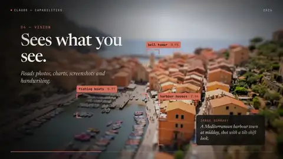
连配乐都是代码的动态图形
HyperFrames+GSAP 逐帧编码，Python 作曲并自动对齐音效；“Creating”段的画作是 Claude 当天在 DaVinci 调色的真作品。
看点：画面、音乐、音效全由同一智能体完成。
可借鉴：Python 合成配乐+按节拍对齐，是本合集最常见的“全栈”配方。
原帖 · Skillry 对照重制 · 提示词文件
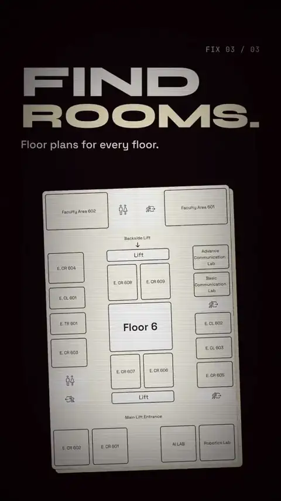
Opus+HyperFrames 组合
作者称 Opus 5.5 与 HyperFrames 是“邪门组合”的一段 CSS 动态图形。
看点：代表大量“晒组合”类帖子，信息量少但传播广。
可借鉴：工具组合（模型+HTML 转视频框架）本身就是卖点。
原帖 · Skillry 对照重制 · 提示词文件
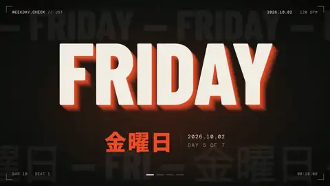
今天星期几（全力版）
提示词仅“今天星期几？用带 BGM 的 30 秒酷炫动态图形告诉我（拼尽全力）”，约 11 分钟出片，BGM 由 Python 现场合成。
看点：极简指令+“全力”激发模型自主创作，附生成时长数据。
可借鉴：“全力以赴/go all out”类措辞在本合集中反复出现且有效。
原帖 · Skillry 对照重制 · 提示词文件
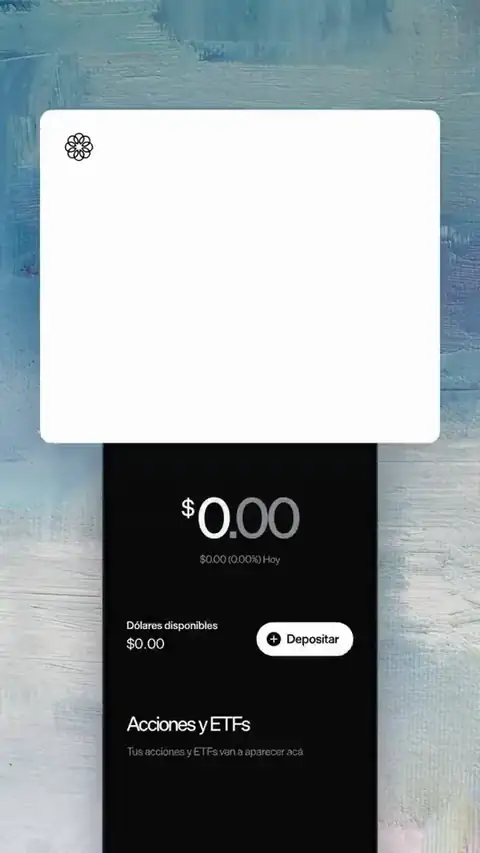
一句提示词的西语片
西班牙语创作者惊叹单个提示词即出此片（Opus 5.5+HyperFrames）。
看点：“一次成片”叙事的典型样本。
可借鉴：无提示词，仅能参考其 SVG+GSAP 技术组合。
原帖 · Skillry 对照重制 · 提示词文件
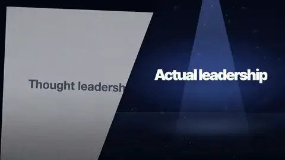
反 LinkedIn 发布片
作者“讨厌 LinkedIn”，让 Opus+Remotion 做了一支调侃式发布视频。
看点：情绪化、梗化题材也能做出产品片质感。
可借鉴：带态度的文案能显著提升代码动画的记忆点。
原帖 · Skillry 对照重制 · 提示词文件
一人一仓库的营销片
Nafa 团队称全部营销已交给 Claude：“我们把品味交给它，一人一个 repo”。
看点：把品牌品味沉淀进仓库，持续复用。
可借鉴：建立“品牌 studio 仓库”（规范、素材、技能）比单次提示更稳定。
原帖 · Skillry 对照重制 · 提示词文件
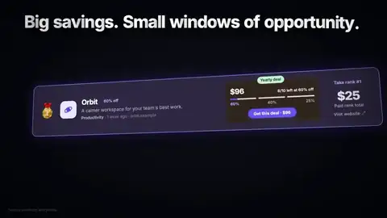
TopSlash 发布片
无剪辑软件、纯代码的 Remotion 发布视频。
看点：SaaS 自制发布片的典型。
可借鉴：产品片常见结构：痛点→界面→卖点→CTA。
原帖 · Skillry 对照重制 · 提示词文件
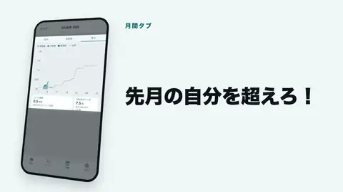
Cardilife 1.3 介绍片
56 秒，Remotion 4（React 19/TS）全片、R3F 做开场 3D、Python 标准库合成音乐；日英双语由同一份代码切换 props 导出。
看点：公开了完整技术栈与分辨率帧率。
可借鉴：多语言版本用 props 参数化，一份代码出多版。
原帖 · Skillry 对照重制 · 提示词文件
Synclify 发布片（坦承变弱）
作者称 Opus 5.5“有点被削弱”，这支要多轮提示、初剪很弱，推回后才变好。
看点：少见的反面体验，提醒别迷信“一发入魂”。
可借鉴：初稿弱时明确指出问题并要求重做，迭代是常态。
原帖 · Skillry 对照重制 · 提示词文件
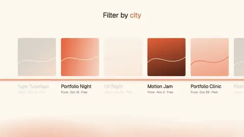
动效设计师要失业了？
完全由 Opus 5.5（Medium 档）+Remotion 制作的动态图形。
看点：证明中档推理也能出片。
可借鉴：effort 档位与成本可权衡。
原帖 · Skillry 对照重制 · 提示词文件
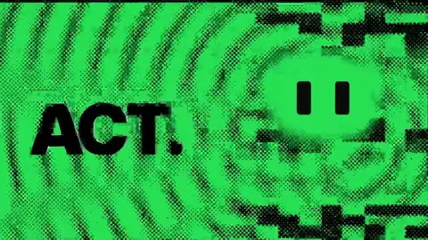
龙猫猫眼发布片
为美团 LongCat 2.5 做的发布片：半色调复印质感、镜头运动、Python 合成节拍并同步剪辑，猫眼作为视觉锚点追随打字、按拍眨眼。
看点：“视觉锚点”贯穿全片，叙事统一。
可借鉴：给全片设一个反复出现的角色/元素作锚点。
原帖 · Skillry 对照重制 · 提示词文件
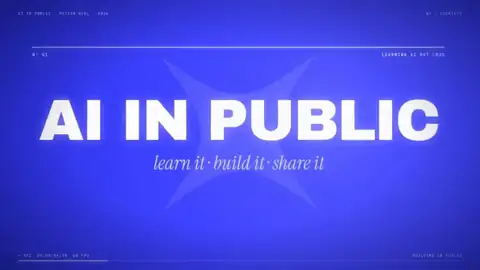
AI In Public 品牌片
Max 档：24 秒 1080p60，指定品牌色 #3D40FE、动态模糊、辉光、HUD、终端 UI、粒子与 Logo 收尾，所有音乐音效代码生成并对齐。
看点：提示词把规格、配色、技法清单、结尾口号一次写全。
可借鉴：“每一帧和每个声音都用代码写”是常见硬约束。
原帖 · Skillry 对照重制 · 提示词文件
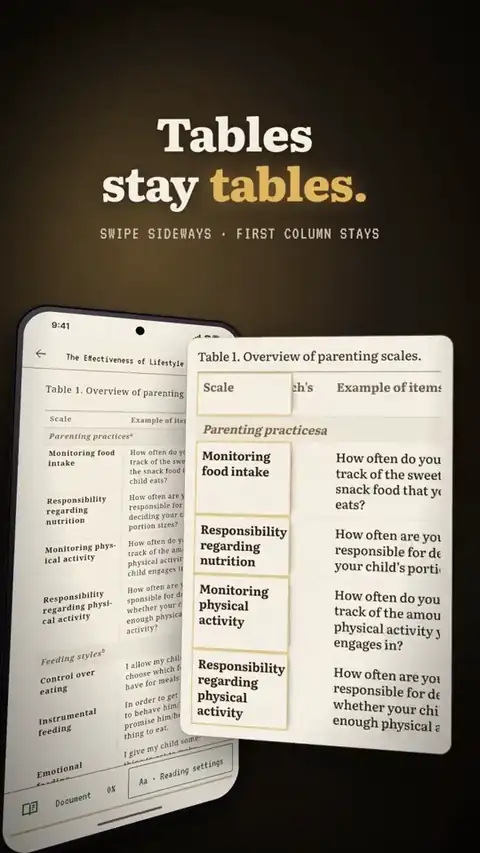
scroll+ 宣传片（土耳其）
土耳其创作者用 Opus 5.5+Remotion 为 scroll+ 做的宣传片。
看点：多语种社区同步跟进。
可借鉴：——（原帖未公开提示词）
原帖 · Skillry 对照重制 · 提示词文件
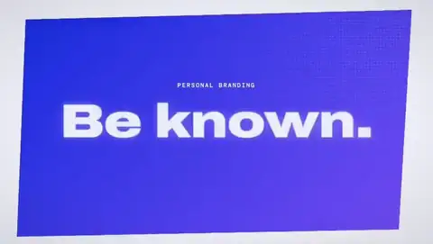
一个参考视频→电影感发布片
只给一个参考视频和一句提示词，Claude Code+Remotion 产出完整电影感发布片。
看点：参考片驱动风格迁移。
可借鉴：给参考视频比描述风格更高效。
原帖 · Skillry 对照重制 · 提示词文件
通院メモリー 发布片
个人开发者 iOS 应用发布视频，Opus 5.5/Remotion/Gemini API 制作“爆速”。
看点：独立开发者把最费时的宣传片环节外包给 AI。
可借鉴：——（原帖未公开提示词）
原帖 · Skillry 对照重制 · 提示词文件
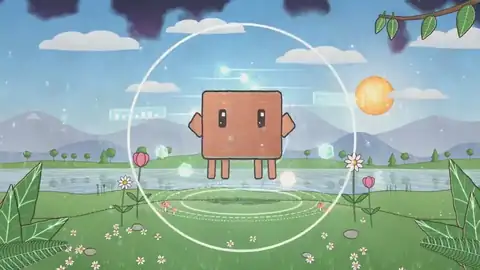
Claude Code 吉祥物短片
10 秒，Opus 5.5 加强档，HeyGen 与 Remotion 作为 skill，Node/ffmpeg/Python，约 40 分钟。
看点：把视频工具封装为 skill 调用。
可借鉴：把第三方服务做成 skill，智能体可自行调度。
原帖 · Skillry 对照重制 · 提示词文件
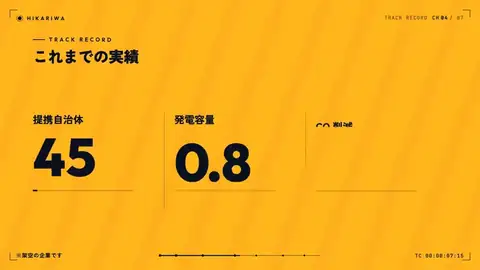
15 秒业绩数据动画
文字、业绩数字、销售图表动起来的 15 秒片，交给结构与动作指示后导出 MP4（公司与数字虚构）。
看点：数据型企业片的低成本做法。
可借鉴：先给“构成+动作”说明，再让模型实现。
原帖 · Skillry 对照重制 · 提示词文件
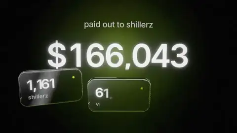
三天四支动态片
为 Shillz 三天做 4 支：Claude 写全部代码，Remotion 出视频，three.js 做真实折射玻璃，Python 写音乐，作者只给批注。
看点：“导演只给 notes”的工作方式。
可借鉴：人做导演、AI 做执行：反馈以批注形式给出。
原帖 · Skillry 对照重制 · 提示词文件
动效 skill 实验
作者坦言音效一般、次日改进；用 Opus 5.5 与 Remotion skills 做动态设计。
看点：承认短板的诚实样本。
可借鉴：音效是代码视频最容易短板的一环。
原帖 · Skillry 对照重制 · 提示词文件
ElevenLabs 自动配音的短视频
Remotion 短视频，角色图来自 Midjourney；接入 ElevenLabs 后模型主动生成旁白与音效。
看点：模型会主动提出补充音频资产。
可借鉴：给智能体接上音频 API，它会自行补全声音层。
原帖 · Skillry 对照重制 · 提示词文件
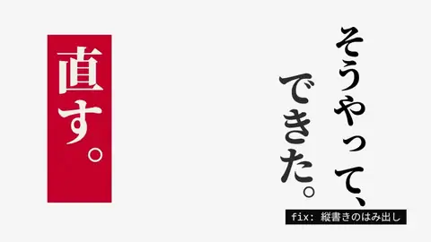
去“AI 味”的时尚广告
作者刻意避开 AI 味，做成似曾相识的时髦 CM；Claude Code+Gemini TTS+HyperFrames。
看点：关注“反 AI 套路”的审美。
可借鉴：明确要求避开常见 AI 视觉套路。
原帖 · Skillry 对照重制 · 提示词文件
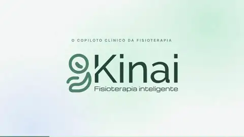
Max 档 HyperFrames
巴西创作者原本不看好 HyperFrames+Opus Max，结果“惊艳”。
看点：样本型条目。
可借鉴：——（原帖未公开提示词）
原帖 · Skillry 对照重制 · 提示词文件
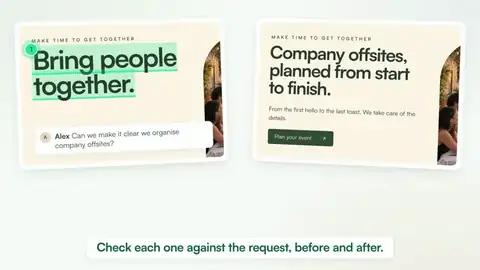
8 小时 15 分的 Max 作品
100% Opus 5.5 Max，耗时 8h15m，接入 DesignLoop、hyperframe skill、ElevenLabs。
看点：长时自主运行的极端例子。
可借鉴：长任务需提前接好设计/音频工具。
原帖 · Skillry 对照重制 · 提示词文件
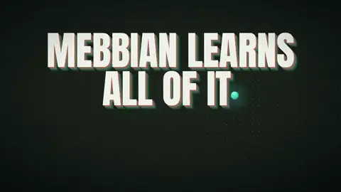
报价 $3000 的发布片
作者称同款被报价 3000 美元；公开一发提示词：“做一支 15 秒解释 {{PRODUCT}} 的动态图形片…”
看点：带变量占位符的可复用模板。
可借鉴：用 {{PRODUCT}} 占位符把提示词做成模板。
原帖 · Skillry 对照重制 · 提示词文件
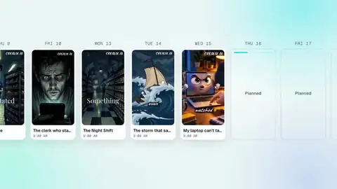
Fal AI 全家桶配声
Opus 5.5+HyperFrames，经 Fal AI 调 ElevenLabs 的音乐、音效、人声端点。
看点：作者坦言“有点上瘾”。
可借鉴：用聚合平台统一调用多种音频模型。
原帖 · Skillry 对照重制 · 提示词文件
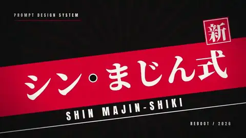
“シンまじん式 PV”
只说“做一支 PV”，HyperFrames 逐帧绘制，BGM 用 Gemini Lyria，音效按拍分析在落地/盖章瞬间卡点。
看点：零视频生成模型。
可借鉴：分析节拍后把音效对到动作关键帧。
原帖 · Skillry 对照重制 · 提示词文件
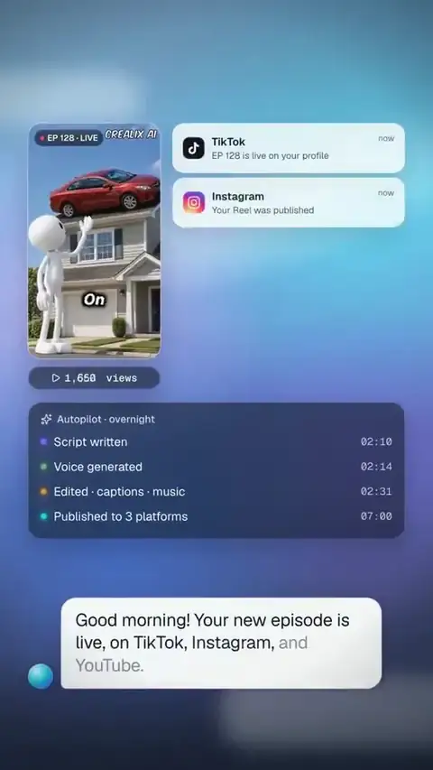
本地 HyperFrames+Fal 配音
Opus Max+HyperFrames 本地运行，Fal AI 负责人声、音乐、音效。
看点：同作者第二例，强调本地流程。
可借鉴：本地渲染+云端音频的混合流程。
原帖 · Skillry 对照重制 · 提示词文件
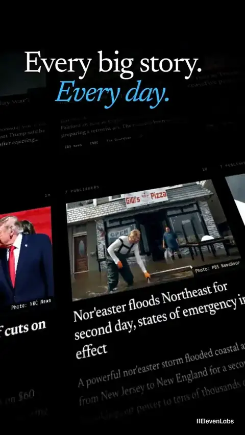
grouped 发布广告（React 应用）
一小时完成，ElevenLabs 配音配乐；广告本身是 React 应用，直接导入网站 CSS 保持品牌一致。
看点：复用站点 CSS = 天然品牌一致。
可借鉴：让视频工程 import 产品自己的样式与组件。
原帖 · Skillry 对照重制 · 提示词文件
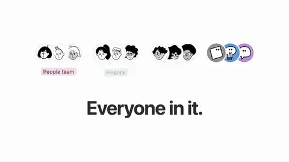
Notion 列权限预告片
非视频团队成员用 Claude 周末做出 Notion 列权限发布预告，附幕后线程。
看点：大公司员工个人产出的官方级片子。
可借鉴：功能发布片：聚焦单一功能，讲清前后对比。
原帖 · Skillry 对照重制 · 提示词文件
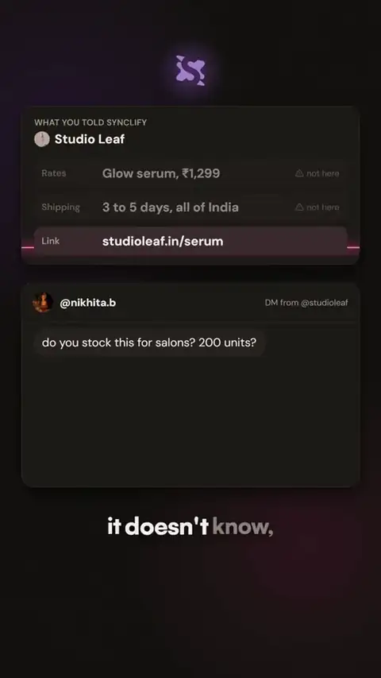
逐音符写成的配乐
无剪辑软件、无 AE、无库存音乐；Python 逐音符作曲，音轨与画面对齐。
看点：同作者第二例，强调音乐全代码。
可借鉴：代码作曲可精确对齐帧号。
原帖 · Skillry 对照重制 · 提示词文件
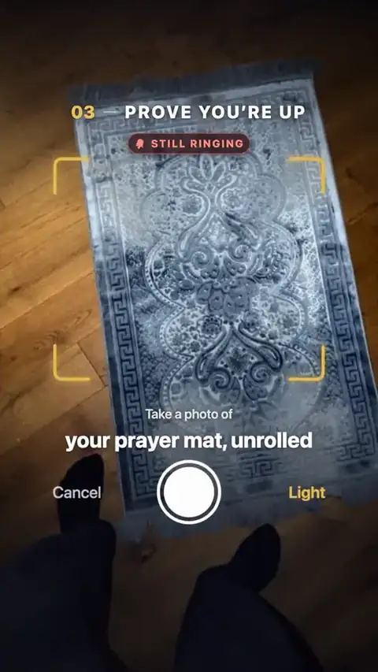
15 秒应用动效片
一个提示词、Claude Code 产出全 React/Remotion 的 15 秒应用片。
看点：样本型条目。
可借鉴：——（原帖未公开提示词）
原帖 · Skillry 对照重制 · 提示词文件
RedShip 版（含提示词）
第二次尝试耗时 1 小时以上，作者分享“扮演资深动效设计师…”提示词供 SaaS 复用。
看点：角色扮演式提示词。
可借鉴：“Act as a senior motion designer”开头 + 产品信息。
原帖 · Skillry 对照重制 · 提示词文件
10 款应用合集宣传
10 个应用真实截图，每刀卡拍，作者用联系表（contact sheet）逐帧审片。
看点：联系表审片法。
可借鉴：让模型导出 contact sheet 便于人工快速审查。
原帖 · Skillry 对照重制 · 提示词文件
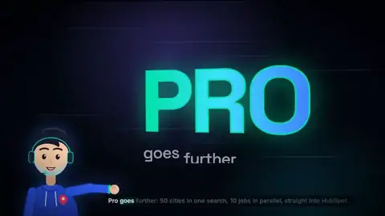
会说话的销售员
模型读网站写脚本，Remotion 逐帧，并做了带口型同步的讲话销售员动画。
看点：代码动画实现口型同步。
可借鉴：先读网站生成脚本，再动画化。
原帖 · Skillry 对照重制 · 提示词文件
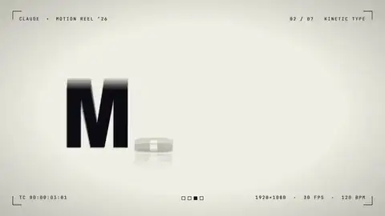
原版提示词复现
用原作提示词在 Claude Code+Remotion 官方插件（xhigh）复现，思考约 23 分钟、渲染约 90 秒，中途断线续跑一次。
看点：复现实验，给出时间数据。
可借鉴：Remotion 官方插件+高 effort 档。
原帖 · Skillry 对照重制 · 提示词文件
一小时两支广告
Opus+Remotion+Gemini TTS，一小时做出两支产品广告，作者称外包要十万日元以上。
看点：成本对比直观。
可借鉴：——（原帖未公开提示词）
原帖 · Skillry 对照重制 · 提示词文件
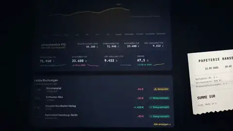
taxtello 产品片
全片 React+Remotion，配乐由 Python 用正弦波与噪声合成。
看点：声音从波形级别手工合成。
可借鉴：正弦+噪声即可合出可用的电子配乐。
原帖 · Skillry 对照重制 · 提示词文件
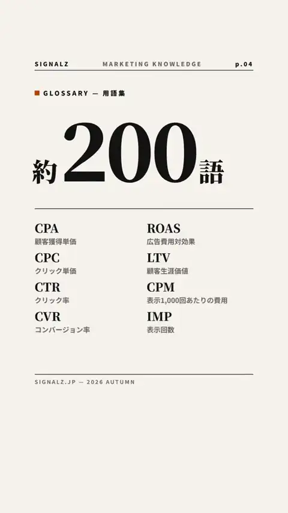
编辑风格频道片
Remotion+ElevenLabs BGM+Gemini TTS；模型用无头 Chrome 截图、ffmpeg 校验 YouTube 规格并经 YouTube Data API 上传。
看点：从制作到上传全链路自动化。
可借鉴：把“发布”也纳入智能体流程（谨慎授权）。
原帖 · Skillry 对照重制 · 提示词文件
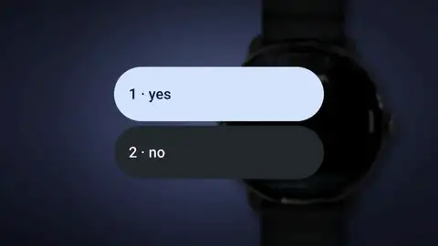
手表品牌片（非一发）
Claude Code（Opus 5.5+Fable 5.1）+Remotion：先分镜、每拍一张静帧，再多轮批注。
看点：反驳“一句提示词”神话，展示专业流程。
可借鉴：分镜→静帧确认→动画，是可控性最高的流程。
原帖 · Skillry 对照重制 · 提示词文件
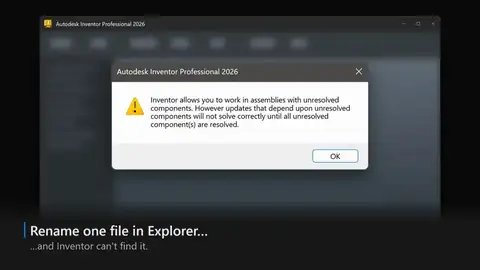
桌面应用 UI 重建宣传
Remotion skill（xhigh）首发即成；模型在视频里重建了桌面应用 UI，作者只挑了 4 个音效和音乐。
看点：重建真实 UI 而非截图。
可借鉴：让模型用代码重画 UI，可自由动画化。
原帖 · Skillry 对照重制 · 提示词文件
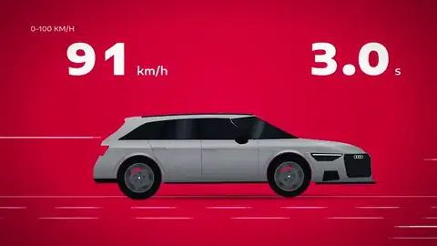
奥迪 RS6 引擎片
15 秒纯代码，合成 V8 声浪，气缸按真实点火顺序闪烁，0–100 计时同步。
看点：把真实工程数据（点火顺序）写进动画。
可借鉴：真实参数让“炫技”变成“可信”。
原帖 · Skillry 对照重制 · 提示词文件
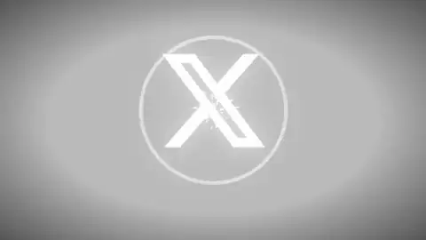
Twitter→𝕏 三十秒史
30 秒讲完 Twitter 变 𝕏，作者未碰任何关键帧，配乐代码作曲。
看点：品牌史类题材。
可借鉴：——（原帖未公开提示词）
原帖 · Skillry 对照重制 · 提示词文件
redesignr 纸感发布片
900 帧、10 场景、纸张风格，全 React 代码。
看点：给出帧数与场景数，便于估算。
可借鉴：用“纸感”等统一材质风格串联多场景。
原帖 · Skillry 对照重制 · 提示词文件
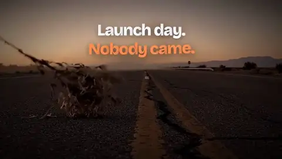
159 个音效的发布片
Remotion 动画，ElevenLabs 生成音乐与 159 个音效并全部卡拍。
看点：音效密度极高。
可借鉴：按事件批量生成音效并对齐时间线。
原帖 · Skillry 对照重制 · 提示词文件
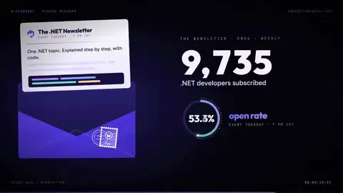
开发者个人 showreel
要求做展示其开发者/创作者/开源维护者身份的 30 秒 Remotion showreel。
看点：个人品牌片。
可借鉴：列出身份标签让模型分段呈现。
原帖 · Skillry 对照重制 · 提示词文件
专用 studio 仓库
作者有专门“studio”仓库存放各项目风格指南、tokens、skills、Remotion，一句“做个 hype 发布片”约 4 小时。
看点：基础设施先行。
可借鉴：建一个可复用的 studio repo。
原帖 · Skillry 对照重制 · 提示词文件
“为什么他们的比我好”
作者把最佳 Opus 视频发给模型，问为何比自己的好，模型据此做出这支带配音、音乐与逐字字幕的片。
看点：让模型先做“对标分析”再创作。
可借鉴：元提示：先分析优秀案例的差距。
原帖 · Skillry 对照重制 · 提示词文件
活动管理网站 reel
React+TS Remotion，Python 以 120 BPM 合成音乐，每刀对拍。
看点：给出 BPM 便于对拍。
可借鉴：先定 BPM，再按拍长切镜。
原帖 · Skillry 对照重制 · 提示词文件
TvTrack 宣传片
Opus+Gemini 作曲+Remotion skill，约 30 分钟运行导出。
看点：音乐交给另一模型。
可借鉴：——（原帖未公开提示词）
原帖 · Skillry 对照重制 · 提示词文件
像素风 3D 片头分析
作者回看分析：3D 渲染器像素风、转场与音效，认为“逻辑调度能力与美学素养挂钩”。
看点：观察者视角的拆解。
可借鉴：——（原帖未公开提示词）
原帖 · Skillry 对照重制 · 提示词文件
苹果风 30 秒应用片
“为我的 app 做苹果风 30 秒视频。”
看点：品牌风格锚。
可借鉴：技术栈：Canvas · SVG · GSAP；原帖仅有推文描述，未公开完整提示词。
原帖 · Skillry 对照重制 · 提示词文件
liinks Instagram 广告
“为 liinks 做一支酷 Instagram 广告。”
看点：同一母题/模板在不同产品上的又一次产出，适合与同题作品横向对比。
可借鉴：技术栈：SVG · CSS；原帖仅有推文描述，未公开完整提示词。
原帖 · Skillry 对照重制 · 提示词文件
应用启动页动画
“为…做移动应用动画启动页。”
看点：同一母题/模板在不同产品上的又一次产出，适合与同题作品横向对比。
可借鉴：技术栈：Canvas · CSS；原帖仅有推文描述，未公开完整提示词。
原帖 · Skillry 对照重制 · 提示词文件
动态图形 · 附完整提示词（147）
铅笔线升三级的自我介绍片
30 秒循环 showreel 介绍“设计师 CLAUDE”：一根铅笔线从纸上石墨、蓝图线框一路升级成黑底光线，始终不离画面。
看点：一镜到底、无剪无淡出，每个镜头都由上一镜的形状/字/色变形而来。
可借鉴：提示词写死字体（Geist 900/600）、四色色值、字距范围——把审美写成数字。
原帖 · Skillry 对照重制 · 提示词文件
未来三十年一镜到底
一镜五站：2026 卫星云、2032 太空电梯环、2040 月球基地、2048 火星城市、2056 戴森镜群，基于真实星球贴图。
看点：时间轴+连续镜头飞行，宏大叙事也能一句话分段描述。
可借鉴：用“年份：画面”列表给出关键帧，模型负责补镜头运动。
原帖 · Skillry 对照重制 · 提示词文件
一个形状变 8–12 个 UI
<inputs> 让用户提供 8–12 个 UI 状态（按钮、加载、播放器、滑块…）、黑白或单一强调色、免版税歌曲；一个形状不剪切地连续变形。
看点：结构化 <inputs>/<rules> 模板，被大量转用（本合集有近 10 例）。
可借鉴：先让模型“向我索要输入”再动手，保证素材到位。
原帖 · Skillry 对照重制 · 提示词文件
Claude Pop 音乐视频
超长导演式提示：用原曲重做 MV，fal 生成角色设定与场景，Seedance 2.5 生成底片，再用 JS 动画“转描”覆盖，只留手绘层；歌词大字排版、反复自审。
看点：把“视频生成做底+代码动画转描”的混合管线写成导演手册。
可借鉴：设立验证循环（反复观看、截图比对）并给预算边界。
原帖 · Skillry 对照重制 · 提示词文件
知名 SaaS 发布片模板
“挑一个大家熟悉的 SaaS，抓真实素材和图片，做成高度专业的发布片。”
看点：被大量复用的模板（合集中 8 例以上）。
可借鉴：要求“抓真实资产”避免占位图。
原帖 · Skillry 对照重制 · 提示词文件
“展示你是多棒的动效设计师”
“为 <网址> 做一支 15 秒动态图形，展示你是多么了不起的动效设计师。”
看点：showreel 母题提示词之一，衍生最多。
可借鉴：让模型“为自己作品集而做”激发上限。
原帖 · Skillry 对照重制 · 提示词文件
Distilbook 40 秒 showreel
“研究 Distilbook，做 40 秒动态图形，像你的 showreel——全力以赴。”
看点：先 research 再创作。
可借鉴：“Research X.”开头让模型先读产品。
原帖 · Skillry 对照重制 · 提示词文件
配合 X 帖子的动画
“扮演世界级动画师，为一条讲 Ultra Code 与 Claude Code 的帖子做配套动画。”
看点：内容配图动画化。
可借鉴：把帖子文本当脚本给模型。
原帖 · Skillry 对照重制 · 提示词文件
火车窗外四季
“火车窗外四季流转，舒适车厢，桌上一杯咖啡，布达佩斯大饭店风格。”
看点：一句话氛围片，导演风格点名。
可借鉴：点名导演/电影风格（韦斯·安德森）即得配色与构图。
原帖 · Skillry 对照重制 · 提示词文件
方形循环 showreel
“15 秒展示 [产品] 为何最好，像 showreel，1080×1080，1 秒 hook，循环。”
看点：规格写进一行。
可借鉴：方形+循环适配社交平台。
原帖 · Skillry 对照重制 · 提示词文件
作品集分析 30 秒片
“你是专业动效设计师，分析我的作品集做 30 秒视频；先查当下流行的动效与声音技巧，质疑你的策略和计划。”
看点：要求自我质疑。
可借鉴：加入“先调研趋势、质疑计划”步骤。
原帖 · Skillry 对照重制 · 提示词文件
按参考视频风格做 30 秒
“下载参考视频，用同样视觉风格研究 Distilbook 做 30 秒片。”
看点：风格迁移。
可借鉴：下载参考→提炼风格→迁移。
原帖 · Skillry 对照重制 · 提示词文件
AIsa 15 秒片
“为 AIsa 做 15 秒动态图形，全力以赴。”
看点：极简母题。
可借鉴：技术栈：Canvas · SVG · CSS；完整提示词见下方链接。
原帖 · Skillry 对照重制 · 提示词文件
代码合成配乐 showreel
“展示你是多棒的动效设计师，像简历 showreel，配乐完全用代码合成。”
看点：声音也要代码化。
可借鉴：在母题后加“compose the soundtrack yourself”。
原帖 · Skillry 对照重制 · 提示词文件
Spotify 主题片（自包含）
完整自包含 brief：18 秒 MP4，交付规格、场景、无需参考或素材。
看点：自包含 brief 可直接复现。
可借鉴：<deliverables> 节写死时长、分辨率、格式。
原帖 · Skillry 对照重制 · 提示词文件
致敬苹果《1984》
“为 Opus 5.5 做 30 秒广告，灵感来自苹果 1984，懂的都懂；避免边框文字。”
看点：经典广告致敬。
可借鉴：点名“避免边角文字/画框”去 AI 味。
原帖 · Skillry 对照重制 · 提示词文件
项目特性宣传片（中文）
“设计动画介绍本项目各项特性，像专业产品宣传片，最后生成 16:9 mp4。”
看点：在代码仓库里直接做。
可借鉴：让模型读项目自身生成宣传片。
原帖 · Skillry 对照重制 · 提示词文件
Distilbook 母题复用
同 #219 提示词由另一作者使用。
看点：模板传播。
可借鉴：技术栈：Three.js · Canvas；完整提示词见下方链接。
原帖 · Skillry 对照重制 · 提示词文件
MotionSites 百万访问发布片
“为 MotionSites AI 做发布片，8 个月月访问破百万。”
看点：里程碑叙事。
可借鉴：用一个数字作为片子核心。
原帖 · Skillry 对照重制 · 提示词文件
Python 脑腐竖屏片
“用 Python 生成 9:16 混乱脑腐视频，好的动效和音效，用 ffmpeg 渲染，加入个人风格呼应 Anthropic 新发布。”
看点：非 Web 管线。
可借鉴：Python+ffmpeg 也是可选路线。
原帖 · Skillry 对照重制 · 提示词文件
“Hello Opus，show me”
“你好 Opus 5.5，展示你是多棒的动效设计师。”
看点：最短母题。
可借鉴：技术栈：GLSL · WebGL · Canvas · 粒子；完整提示词见下方链接。
原帖 · Skillry 对照重制 · 提示词文件
15 秒动态图形（中文）
“以动态设计师的高级审美，制作一段 15 秒动态图形视频。”
看点：中文版母题。
可借鉴：技术栈：Canvas；完整提示词见下方链接。
原帖 · Skillry 对照重制 · 提示词文件
chaindotwtf 30 秒 pitch
“为 @chaindotwtf 做 30 秒 pitch 视频。”
看点：极简。
可借鉴：技术栈：Three.js · Canvas；完整提示词见下方链接。
原帖 · Skillry 对照重制 · 提示词文件
Quetzal showreel
母题套用 Quetzal。
看点：同一母题/模板在不同产品上的又一次产出，适合与同题作品横向对比。
可借鉴：技术栈：SVG · GSAP；完整提示词见下方链接。
原帖 · Skillry 对照重制 · 提示词文件
只用 JS+Playwright+FFmpeg
“只用 JavaScript、Playwright、FFmpeg，为产品做模拟日常消费的现代视频。”
看点：限定工具链。
可借鉴：Playwright 逐帧截屏+FFmpeg 合成是通用渲染管线。
原帖 · Skillry 对照重制 · 提示词文件
mdfor.dev 30 秒片
母题+“用真实素材”介绍 mdfor.dev。
看点：同一母题/模板在不同产品上的又一次产出，适合与同题作品横向对比。
可借鉴：要求用真实素材。
原帖 · Skillry 对照重制 · 提示词文件
TanStack AI 发布片
“像 Studio1 出品的高端开发者工具发布片：快、精准、意外、足够精致。”
看点：点名工作室水准。
可借鉴：用工作室/品牌作质量锚。
原帖 · Skillry 对照重制 · 提示词文件
“让人说 Wow”
“做一个让人看到就说 Wow 的沉浸式作品，可以是视频或任何东西。”
看点：完全开放。
可借鉴：技术栈：GLSL · WebGL · Canvas；完整提示词见下方链接。
原帖 · Skillry 对照重制 · 提示词文件
SaaS 发布片模板（填网址）
#216 模板的变体：直接填入目标网站。
看点：同一母题/模板在不同产品上的又一次产出，适合与同题作品横向对比。
可借鉴：技术栈：SVG · GSAP；完整提示词见下方链接。
原帖 · Skillry 对照重制 · 提示词文件
邮箱验证工具片
“20 秒展示邮箱验证工具，列出所有你能想到的用例，现代 SaaS 风。”
看点：用例清单式。
可借鉴：技术栈：SVG；完整提示词见下方链接。
原帖 · Skillry 对照重制 · 提示词文件
低多边形碎片拼 Logo
“先画线框 Logo，再让低多边形碎片逐片飞入拼成，最后引入 app 图标。”
看点：分步过渡描述清晰。
可借鉴：按时间顺序描述过渡步骤。
原帖 · Skillry 对照重制 · 提示词文件
复古 CRT 发布片
“仅把图当风格参考，做 20 秒 Opus 发布片，加胶片颗粒与 CRT 效果。”
看点：参考图只取气质。
可借鉴：区分“风格参考”与“内容参考”。
原帖 · Skillry 对照重制 · 提示词文件
AllInvestView 片
“展示 AllInvestView 平台，全力以赴。”
看点：同一母题/模板在不同产品上的又一次产出，适合与同题作品横向对比。
可借鉴：技术栈：SVG · GSAP；完整提示词见下方链接。
原帖 · Skillry 对照重制 · 提示词文件
20 秒内品牌发布片
“20 秒以内展示全部关键功能，快节奏，贴合品牌。”
看点：同一母题/模板在不同产品上的又一次产出，适合与同题作品横向对比。
可借鉴：技术栈：Canvas · SVG；完整提示词见下方链接。
原帖 · Skillry 对照重制 · 提示词文件
DevRel 作品集 showreel
用 Remotion 为 DevRel 工程师作品集网站做 showreel。
看点：同一母题/模板在不同产品上的又一次产出，适合与同题作品横向对比。
可借鉴：技术栈：SVG · GSAP；完整提示词见下方链接。
原帖 · Skillry 对照重制 · 提示词文件
nohandslabs 15 秒
“用你所有本领做最酷的 15 秒片。”
看点：同一母题/模板在不同产品上的又一次产出，适合与同题作品横向对比。
可借鉴：技术栈：Canvas · SVG；完整提示词见下方链接。
原帖 · Skillry 对照重制 · 提示词文件
研究网站后做展示片
“研究这个网站如何运作，用 Remotion 做产品展示片。”
看点：同一母题/模板在不同产品上的又一次产出，适合与同题作品横向对比。
可借鉴：技术栈：SVG；完整提示词见下方链接。
原帖 · Skillry 对照重制 · 提示词文件
迷幻故障 MV（日）
用所给歌曲与角色图做“迷幻故障”MV；Canvas 动画、Playwright 逐帧截取、ffmpeg 合成，1280×720/30fps/30MB 内。
看点：管线与规格写得极具体。
可借鉴：“不用 AI 视频生成，全部程序动画”的硬约束。
原帖 · Skillry 对照重制 · 提示词文件
“你是谁”10 秒片 A
“10 秒展示作为 Opus 5.5 的你是谁，避免边角框与文字等典型 AI 痕迹。”
看点：自画像题。
可借鉴：明确列出要避免的 AI 痕迹。
原帖 · Skillry 对照重制 · 提示词文件
PDoom 风格 MV
“按 PDoomVideo 仓库的风格，为这首歌做 MV，不必逐句表现。”
看点：以开源代码仓库为风格参考。
可借鉴：直接给参考项目的源代码。
原帖 · Skillry 对照重制 · 提示词文件
Bento.surf 40 秒片
Distilbook 母题套用 Bento.surf。
看点：同一母题/模板在不同产品上的又一次产出，适合与同题作品横向对比。
可借鉴：技术栈：SVG · GSAP · CSS；完整提示词见下方链接。
原帖 · Skillry 对照重制 · 提示词文件
日本 2026 酷暑 3 分钟
“空仓库：用 JS/TS 做 3 分钟动画可视化日本 2026 酷暑，自行拉取在线数据分析原因。”
看点：数据新闻长片。
可借鉴：让模型自行获取真实数据。
原帖 · Skillry 对照重制 · 提示词文件
亚马逊批发 pitch
“15 秒向品牌方推销我的亚马逊批发公司。”
看点：B2B 场景。
可借鉴：技术栈：Canvas · SVG；完整提示词见下方链接。
原帖 · Skillry 对照重制 · 提示词文件
Dario vs Sam 一分钟
“一分钟 Dario 与 Sam 打斗片，要有情节、爆点、搞笑且足够抽象，风格不限。”
看点：名人梗题。
可借鉴：技术栈：Canvas；完整提示词见下方链接。
原帖 · Skillry 对照重制 · 提示词文件
德语“像 Anthropic 那样”
德语：“做个发布视频，像 Anthropic 那样”，沿用推理初创公司提示词。
看点：提示词跨语言传播。
可借鉴：技术栈：GSAP；完整提示词见下方链接。
原帖 · Skillry 对照重制 · 提示词文件
Pen 设计稿发布片
“用 pen 里的设计做专业发布片”；追问“选一首免版税歌，你作曲不太行”。
看点：承认模型作曲短板。
可借鉴：音乐不满意时换成免版税曲。
原帖 · Skillry 对照重制 · 提示词文件
flowdrive showreel
母题套用 flowdrive。
看点：同一母题/模板在不同产品上的又一次产出，适合与同题作品横向对比。
可借鉴：技术栈：Canvas · SVG；完整提示词见下方链接。
原帖 · Skillry 对照重制 · 提示词文件
60 秒主题 showreel
母题 60 秒版，主题定为某议题的重要性。
看点：同一母题/模板在不同产品上的又一次产出，适合与同题作品横向对比。
可借鉴：技术栈：Canvas；完整提示词见下方链接。
原帖 · Skillry 对照重制 · 提示词文件
形状变 UI（第 4 例）
同模板另一作者实现。
看点：同一母题/模板在不同产品上的又一次产出，适合与同题作品横向对比。
可借鉴：技术栈：CSS；完整提示词见下方链接。
原帖 · Skillry 对照重制 · 提示词文件
“你对我了解多少”
“用你对我的了解做 10 秒视频。”
看点：依赖记忆个性化。
可借鉴：技术栈：Three.js · GLSL · Canvas；完整提示词见下方链接。
原帖 · Skillry 对照重制 · 提示词文件
Supademo 发布片
“世界级动效设计师：先研究核心价值与叙事，首秒 hook，随后分明的节拍。”
看点：同一母题/模板在不同产品上的又一次产出，适合与同题作品横向对比。
可借鉴：技术栈：SVG · GSAP；完整提示词见下方链接。
原帖 · Skillry 对照重制 · 提示词文件
Studio1 案例片
“从案例研究获取信息，为 Studio1 做 15 秒介绍。”
看点：同一母题/模板在不同产品上的又一次产出，适合与同题作品横向对比。
可借鉴：技术栈：Canvas · SVG · GSAP；完整提示词见下方链接。
原帖 · Skillry 对照重制 · 提示词文件
形状变 UI（第 5 例）
同模板另一作者实现。
看点：同一母题/模板在不同产品上的又一次产出，适合与同题作品横向对比。
可借鉴：技术栈：SVG · GSAP；完整提示词见下方链接。
原帖 · Skillry 对照重制 · 提示词文件
gene spectra 促销片
“用线上站点现有素材做 15 秒促销片。”
看点：复用站点资产。
可借鉴：技术栈：Canvas · SVG；完整提示词见下方链接。
原帖 · Skillry 对照重制 · 提示词文件
sprites.ai 一形到底
“分析 sprites.ai，用我们自己的 UI 而非通用组件；Dribbble 级 UI 动效，一个形状不剪切，每个状态都是同一元素变形尺寸与圆角。”
看点：“形状变 UI”模板的精炼版。
可借鉴：明确“用自家 UI，不要通用组件”。
原帖 · Skillry 对照重制 · 提示词文件
15 秒自我推广
“做 15 秒以上自我推广片。”
看点：同一母题/模板在不同产品上的又一次产出，适合与同题作品横向对比。
可借鉴：技术栈：GSAP；完整提示词见下方链接。
原帖 · Skillry 对照重制 · 提示词文件
LLM 进化轨迹片
“做一支今年 1 月至今的 LLM 进展视频：模型、能力与趋势。”
看点：行业时间线。
可借鉴：技术栈：Canvas；完整提示词见下方链接。
原帖 · Skillry 对照重制 · 提示词文件
DreamFort 宣言片
“20 秒动态图形宣言：‘超级智能应属于每个人’，每帧每声都用代码，不用图像/视频模型。”
看点：宣言式口号片。
可借鉴：一句口号+纯代码约束。
原帖 · Skillry 对照重制 · 提示词文件
虚构 Netflix 惊悚片片头
“为一部还不存在的 Netflix 惊悚剧做 20 秒片头，像拿了艾美主标题设计奖。”
看点：高质量锚点（艾美奖）。
可借鉴：用奖项作质量参照。
原帖 · Skillry 对照重制 · 提示词文件
Ren 音画炫技
“给你 Ren 仓库访问权，做 30 秒展示动效与声音设计，放开做。”
看点：声音设计并重。
可借鉴：技术栈：Canvas · Web Audio；完整提示词见下方链接。
原帖 · Skillry 对照重制 · 提示词文件
showreel 核心作品
“像世界级设计师 showreel 的压轴作品，把它当简历，展示全部能力。”
看点：同一母题/模板在不同产品上的又一次产出，适合与同题作品横向对比。
可借鉴：技术栈：Three.js · GLSL · Canvas；完整提示词见下方链接。
原帖 · Skillry 对照重制 · 提示词文件
“你自己的 15 秒 reel”
“做你自己的 15 秒动态 reel，全力以赴。”
看点：同一母题/模板在不同产品上的又一次产出，适合与同题作品横向对比。
可借鉴：技术栈：Canvas；完整提示词见下方链接。
原帖 · Skillry 对照重制 · 提示词文件
先写提示词再执行
第一步“为我们网站广告写一段动效设计提示词”，第二步“执行它”。
看点：元提示两步法。
可借鉴：让模型先写 brief 再执行，便于人审。
原帖 · Skillry 对照重制 · 提示词文件
lidlezz 15 秒（土耳其）
土耳其语：“证明你是多好的动态图形设计师，15 秒介绍 lidlezz.app。”
看点：母题跨语言。
可借鉴：技术栈：Three.js · Canvas；完整提示词见下方链接。
原帖 · Skillry 对照重制 · 提示词文件
宝可梦 UI 片
<inputs> 索要宝可梦或御三家、8–12 个宝可梦主题 UI 状态、约 120 BPM 歌曲，并确认许可。
看点：模板二创。
可借鉴：同模板换主题。
原帖 · Skillry 对照重制 · 提示词文件
歌词动态图形
“根据附带音乐做歌词动态图形，歌词与动画精准对齐人声和节拍。”
看点：歌词对齐。
可借鉴：技术栈：GLSL · Canvas · SVG；完整提示词见下方链接。
原帖 · Skillry 对照重制 · 提示词文件
SaaS 发布片模板（另一例）
#216 模板复用。
看点：同一母题/模板在不同产品上的又一次产出，适合与同题作品横向对比。
可借鉴：技术栈：SVG · GSAP；完整提示词见下方链接。
原帖 · Skillry 对照重制 · 提示词文件
Alchemy showreel
母题套用 alchemy.com。
看点：同一母题/模板在不同产品上的又一次产出，适合与同题作品横向对比。
可借鉴：技术栈：Three.js · Canvas · SVG · CSS；完整提示词见下方链接。
原帖 · Skillry 对照重制 · 提示词文件
网站 15 秒 showreel
“为我的网站做 15 秒 showreel。”
看点：同一母题/模板在不同产品上的又一次产出，适合与同题作品横向对比。
可借鉴：技术栈：Canvas · SVG · CSS；完整提示词见下方链接。
原帖 · Skillry 对照重制 · 提示词文件
heeya.fr 介绍（法）
法语一句话请求。
看点：同一母题/模板在不同产品上的又一次产出，适合与同题作品横向对比。
可借鉴：技术栈：Three.js · Canvas；完整提示词见下方链接。
原帖 · Skillry 对照重制 · 提示词文件
形状变 UI（第 6 例）
同模板另一作者实现。
看点：同一母题/模板在不同产品上的又一次产出，适合与同题作品横向对比。
可借鉴：技术栈：SVG；完整提示词见下方链接。
原帖 · Skillry 对照重制 · 提示词文件
时间驱动的帧渲染管线
“HTML/JS 页每帧由时间计算，Playwright 无头 Chrome 逐帧截取，ffmpeg 合成 MP4 并加运动模糊。”
看点：把渲染管线写成需求。
可借鉴：“每帧是时间的纯函数”保证可逐帧导出。
原帖 · Skillry 对照重制 · 提示词文件
SaaS 发布片模板（另一例）
#216 模板复用。
看点：同一母题/模板在不同产品上的又一次产出，适合与同题作品横向对比。
可借鉴：技术栈：SVG；完整提示词见下方链接。
原帖 · Skillry 对照重制 · 提示词文件
账号介绍 15 秒（土耳其）
分享 Logo 等，请模型证明设计水平。
看点：同一母题/模板在不同产品上的又一次产出，适合与同题作品横向对比。
可借鉴：技术栈：Canvas；完整提示词见下方链接。
原帖 · Skillry 对照重制 · 提示词文件
OBLT 电动车 X 光头图
React 全屏暗色电影感电动车头图，鼠标跟随“X 光”聚光灯揭示内部。
看点：网页交互头图。
可借鉴：写成组件规格（客户端组件、纯 CSS）。
原帖 · Skillry 对照重制 · 提示词文件
BUILD THE FLOOR 字体片
“20 秒动态口语字体片，完全用排版演出一段原创小演讲，每行都改变画面结构。”
看点：纯排版叙事。
可借鉴：“每一行改变画面建筑”的规则。
原帖 · Skillry 对照重制 · 提示词文件
形状变 UI（第 7 例）
同模板另一作者实现。
看点：同一母题/模板在不同产品上的又一次产出，适合与同题作品横向对比。
可借鉴：技术栈：SVG；完整提示词见下方链接。
原帖 · Skillry 对照重制 · 提示词文件
漫画风 10 秒
“有趣的动态图形，漫画书风格，10 秒。”
看点：同一母题/模板在不同产品上的又一次产出，适合与同题作品横向对比。
可借鉴：技术栈：SVG；完整提示词见下方链接。
原帖 · Skillry 对照重制 · 提示词文件
生命循环 showreel
母题 20 秒版，主题为生命循环。
看点：同一母题/模板在不同产品上的又一次产出，适合与同题作品横向对比。
可借鉴：技术栈：Canvas；完整提示词见下方链接。
原帖 · Skillry 对照重制 · 提示词文件
Mentis 法语片
母题+“文字用法语”。
看点：同一母题/模板在不同产品上的又一次产出，适合与同题作品横向对比。
可借鉴：技术栈：Canvas；完整提示词见下方链接。
原帖 · Skillry 对照重制 · 提示词文件
ocrX 安卓发布片
“为 ocrX 安卓应用做发布视频。”
看点：同一母题/模板在不同产品上的又一次产出，适合与同题作品横向对比。
可借鉴：技术栈：SVG；完整提示词见下方链接。
原帖 · Skillry 对照重制 · 提示词文件
TechHalla 身份片头
“世界级动效设计师为 TechHalla 做 20 秒动态身份片头——‘可偷的工作流，而不是氛围’。”
看点：创作者个人品牌。
可借鉴：用品牌口号定调。
原帖 · Skillry 对照重制 · 提示词文件
从代码库做 1 分钟宣传
“根据代码库做这个产品的 1 分钟宣传片。”
看点：同一母题/模板在不同产品上的又一次产出，适合与同题作品横向对比。
可借鉴：技术栈：GSAP；完整提示词见下方链接。
原帖 · Skillry 对照重制 · 提示词文件
拟人化自我介绍
“15 秒，把你自己拟人化，介绍 Opus 5.5。”
看点：同一母题/模板在不同产品上的又一次产出，适合与同题作品横向对比。
可借鉴：技术栈：Three.js · Canvas · SVG；完整提示词见下方链接。
原帖 · Skillry 对照重制 · 提示词文件
SaaS 发布片模板（另一例）
#216 模板复用。
看点：同一母题/模板在不同产品上的又一次产出，适合与同题作品横向对比。
可借鉴：技术栈：SVG · GSAP；完整提示词见下方链接。
原帖 · Skillry 对照重制 · 提示词文件
彼得·盖布瑞尔风 MV
“60 秒 MV，Sledgehammer/Big Time 风格但用现代人物；歌也自己写，像 So 专辑里的。”
看点：音乐+视觉双致敬。
可借鉴：技术栈：Three.js · Canvas · Web Audio；完整提示词见下方链接。
原帖 · Skillry 对照重制 · 提示词文件
SaaS 发布片模板（另一例）
#216 模板复用。
看点：同一母题/模板在不同产品上的又一次产出，适合与同题作品横向对比。
可借鉴：技术栈：SVG · GSAP；完整提示词见下方链接。
原帖 · Skillry 对照重制 · 提示词文件
Flora 广告（葡）
用 ads 文件夹的视频截图作参考，只用 JS、Playwright、FFmpeg。
看点：同一母题/模板在不同产品上的又一次产出，适合与同题作品横向对比。
可借鉴：技术栈：Canvas · SVG · GSAP；完整提示词见下方链接。
原帖 · Skillry 对照重制 · 提示词文件
Lightspark 社交短片
“为 @lightspark 做有冲击力的社交短片，要量产级带声音。”
看点：同一母题/模板在不同产品上的又一次产出，适合与同题作品横向对比。
可借鉴：技术栈：SVG · GSAP；完整提示词见下方链接。
原帖 · Skillry 对照重制 · 提示词文件
终端脑腐片
“做一支关于终端的脑腐视频，我逃不掉，AI 太上瘾了。”
看点：同一母题/模板在不同产品上的又一次产出，适合与同题作品横向对比。
可借鉴：技术栈：SVG；完整提示词见下方链接。
原帖 · Skillry 对照重制 · 提示词文件
最惊艳 demo 片
“为（公司名）做最惊艳的演示视频。”
看点：同一母题/模板在不同产品上的又一次产出，适合与同题作品横向对比。
可借鉴：技术栈：SVG · GSAP · CSS；完整提示词见下方链接。
原帖 · Skillry 对照重制 · 提示词文件
Claude vs ChatGPT 预告
“高细节预告片：Claude 与 ChatGPT 的残酷对决，引人入胜的故事和动作节奏。”
看点：同一母题/模板在不同产品上的又一次产出，适合与同题作品横向对比。
可借鉴：技术栈：Canvas；完整提示词见下方链接。
原帖 · Skillry 对照重制 · 提示词文件
HyperFrames 预告片
“用 HyperFrames 为帖子中的产品做约 27 秒横屏预告，匹配产品 UI、壁纸、文案，动作慢而精致。”
看点：同一母题/模板在不同产品上的又一次产出，适合与同题作品横向对比。
可借鉴：技术栈：Canvas · SVG · GSAP · AI 生图；完整提示词见下方链接。
原帖 · Skillry 对照重制 · 提示词文件
火焰武士
“只用 JS 做一个武士在原地完成一套惊艳动作的火焰表演。”
看点：角色动画+粒子。
可借鉴：技术栈：Canvas · 粒子 · 物理；完整提示词见下方链接。
原帖 · Skillry 对照重制 · 提示词文件
火柴人海战（葡）
“做火柴人海战动画，用我某文件夹里的音效。”
看点：使用自有音效。
可借鉴：技术栈：Canvas · Web Audio；完整提示词见下方链接。
原帖 · Skillry 对照重制 · 提示词文件
Slideforge 发布片
#216 模板指定 slideforge.io。
看点：同一母题/模板在不同产品上的又一次产出，适合与同题作品横向对比。
可借鉴：技术栈：SVG · GSAP · CSS；完整提示词见下方链接。
原帖 · Skillry 对照重制 · 提示词文件
加密梗改编
“做一个类似版本但加入加密货币梗。”
看点：同一母题/模板在不同产品上的又一次产出，适合与同题作品横向对比。
可借鉴：技术栈：Canvas · 粒子 · 像素；完整提示词见下方链接。
原帖 · Skillry 对照重制 · 提示词文件
Tented 生图能力片
“动画展示用户请求品牌图片并看到其被加入内容。”
看点：同一母题/模板在不同产品上的又一次产出，适合与同题作品横向对比。
可借鉴：技术栈：Canvas · CSS；完整提示词见下方链接。
原帖 · Skillry 对照重制 · 提示词文件
140 BPM 英式 dubstep
提示词只是“140 BPM rusko/skream 风 UK dubstep”。
看点：以音乐风格为唯一指令。
可借鉴：技术栈：Canvas；完整提示词见下方链接。
原帖 · Skillry 对照重制 · 提示词文件
卡通大逃杀 UI
“卡通大逃杀：毒圈计时、存活人数、物品栏、小地图、表情轮盘、胜利结算屏。”
看点：游戏 UI 清单。
可借鉴：技术栈：Three.js · SVG；完整提示词见下方链接。
原帖 · Skillry 对照重制 · 提示词文件
SaaS 发布片模板（另一例）
#216 模板复用。
看点：同一母题/模板在不同产品上的又一次产出，适合与同题作品横向对比。
可借鉴：技术栈：SVG · GSAP · CSS；完整提示词见下方链接。
原帖 · Skillry 对照重制 · 提示词文件
双主角 20 秒 MV
“独立端到端完成 20 秒故事 MV，一男一女主角，概念与叙事要独特。”
看点：借用 #215 的开头句式。
可借鉴：技术栈：Canvas · 像素；完整提示词见下方链接。
原帖 · Skillry 对照重制 · 提示词文件
“能爆火的视频”
“做一支可能爆火的视频。”
看点：同一母题/模板在不同产品上的又一次产出，适合与同题作品横向对比。
可借鉴：技术栈：Canvas · 物理 · Web Audio；完整提示词见下方链接。
原帖 · Skillry 对照重制 · 提示词文件
AppSumo 提交流程
“30 秒手绘风：1 连接智能体 2 智能体填写上架信息 3 上线。”
看点：步骤式解说。
可借鉴：技术栈：Canvas；完整提示词见下方链接。
原帖 · Skillry 对照重制 · 提示词文件
“成为你是什么感觉”
“用任何工具做 30 秒视频，讲做你是什么感觉。”
看点：同一母题/模板在不同产品上的又一次产出，适合与同题作品横向对比。
可借鉴：技术栈：Canvas；完整提示词见下方链接。
原帖 · Skillry 对照重制 · 提示词文件
ODATANO 硬核剪辑
“做一支很燃的 ODATANO edit。”
看点：同一母题/模板在不同产品上的又一次产出，适合与同题作品横向对比。
可借鉴：技术栈：Canvas · SVG；完整提示词见下方链接。
原帖 · Skillry 对照重制 · 提示词文件
台湾黑熊中秋
手绘 Canvas 风“中秋快乐”，以所附台湾黑熊为主角：扁平黑剪影、圆润造型。
看点：角色设定写得具体。
可借鉴：技术栈：Canvas；完整提示词见下方链接。
原帖 · Skillry 对照重制 · 提示词文件
GravityDEX×五条悟
“做一支很燃的 GravityDEX x 五条悟 edit。”
看点：同一母题/模板在不同产品上的又一次产出，适合与同题作品横向对比。
可借鉴：技术栈：Canvas；完整提示词见下方链接。
原帖 · Skillry 对照重制 · 提示词文件
欢乐摄像师
“你是专业摄像师，用 JavaScript 做高清、有创意、欢快、声画匹配的视频。”
看点：同一母题/模板在不同产品上的又一次产出，适合与同题作品横向对比。
可借鉴：技术栈：Canvas · SVG · GSAP · CSS；完整提示词见下方链接。
原帖 · Skillry 对照重制 · 提示词文件
推理初创片（无库版）
#217 提示词加“不用视频生成模型、不加额外库”。
看点：同一母题/模板在不同产品上的又一次产出，适合与同题作品横向对比。
可借鉴：技术栈：SVG · GSAP；完整提示词见下方链接。
原帖 · Skillry 对照重制 · 提示词文件
纸艺分形可视化
“分形可视化器（曼德博等），风格像纸板手工，加电影感后期。”
看点：数学×手工材质。
可借鉴：技术栈：GLSL · WebGL · Canvas；完整提示词见下方链接。
原帖 · Skillry 对照重制 · 提示词文件
鼠标画蒙娜丽莎
“搜索蒙娜丽莎，在 Chrome 的 JS 画板里用鼠标与笔刷复制它”，再“把你刚做的过程做成视频”。
看点：计算机操作→过程视频。
可借鉴：技术栈：Canvas；完整提示词见下方链接。
原帖 · Skillry 对照重制 · 提示词文件
烟花粒子秀（土耳其）
“做你能做的最惊艳烟花/光粒子秀，自选环境与美术，重节奏、纵深与光照。”
看点：同一母题/模板在不同产品上的又一次产出，适合与同题作品横向对比。
可借鉴：技术栈：Three.js · GLSL · 粒子；完整提示词见下方链接。
原帖 · Skillry 对照重制 · 提示词文件
碰撞奏乐机器
“做一台 45 秒的机器演奏原创音乐，每个音符都来自可见的碰撞。”
看点：@KamStudioLabs 三作之一，声画同源。
可借鉴：声音由物理事件触发。
原帖 · Skillry 对照重制 · 提示词文件
10 秒广告 reel（西）
“用这些信息做 10 秒很有广告感的 reel。”
看点：同一母题/模板在不同产品上的又一次产出，适合与同题作品横向对比。
可借鉴：技术栈：SVG · CSS；完整提示词见下方链接。
原帖 · Skillry 对照重制 · 提示词文件
不想被修复的 bug
“做 90 秒动画短片，讲一个不想被修复的 bug。”
看点：拟人化叙事。
可借鉴：技术栈：Canvas · 粒子；完整提示词见下方链接。
原帖 · Skillry 对照重制 · 提示词文件
玻璃金箔马赛克短片
“80 秒方形动画，单 HTML、WebGL2 纯 JS，无库无图无字体无音频文件，像玻璃与金箔墙面马赛克。”
看点：材质规格极严苛。
可借鉴：零外部文件的硬约束。
原帖 · Skillry 对照重制 · 提示词文件
声音讲一半故事的默片
“45 秒无对白短片，声音讲述一半故事，自己编故事。”
看点：声音叙事。
可借鉴：技术栈：Canvas · Web Audio；完整提示词见下方链接。
原帖 · Skillry 对照重制 · 提示词文件
搞笑短片
“做一支好笑的视频，题材不限，10–30 秒。”
看点：同一母题/模板在不同产品上的又一次产出，适合与同题作品横向对比。
可借鉴：技术栈：SVG · Web Audio；完整提示词见下方链接。
原帖 · Skillry 对照重制 · 提示词文件
爆炸效果（土耳其）
“做最惊艳的爆炸效果和承载它的原创场景，起爆、力的传播与后果都要可追踪。”
看点：同一母题/模板在不同产品上的又一次产出，适合与同题作品横向对比。
可借鉴：技术栈：Three.js · GLSL；完整提示词见下方链接。
原帖 · Skillry 对照重制 · 提示词文件
纸偶皮影“家”
“纯 JS 动画，30–60 秒竖屏，剪纸皮影戏风格，配代码生成的柔和音频，主题：是什么让一个地方像家？”
看点：材质+主题都很具体。
可借鉴：技术栈：Canvas · 粒子 · Web Audio；完整提示词见下方链接。
原帖 · Skillry 对照重制 · 提示词文件
解说（Explainers）（68）
可剖开的相机镜头
交互 3D 专业变焦镜头：镜片组、光圈叶片、对焦马达、防抖、卡口金触点，侧面剖开显示光路汇聚到传感器。
看点：“看不见的内部”+剖面+光束可视化，解说类爆款模板。
可借鉴：按“外观真实→内部零件清单→剖切→光路→可拖拽缩放”顺序写提示词。
原帖 · Skillry 对照重制 · 提示词文件
可拆解的涡扇发动机
浏览器里可拆的 3D 涡扇，“吸-压-燃-排”逐级标注，最后爆炸分解。
看点：把工程知识点逐条写进提示词，模型据此做准确标注。
可借鉴：用“> 知识点”列表直接给出要讲的物理事实，减少幻觉。
原帖 · Skillry 对照重制 · 提示词文件
二维码如何纠错
Three.js 交互解说：二维码怎样承载信息、损坏后如何修复，含音效设计。
看点：提示词极短却明确要求“视觉+声音处理”，出片完整。
可借鉴：解说片别忘了把 sound design 写进需求。
原帖 · Skillry 对照重制 · 提示词文件
会跳动的人类心脏
单文件 Three.js 心脏：四腔四瓣、主动脉/肺动脉、传导系统，约每秒一跳，血流蓝进红出，可爆炸分解。
看点：与镜头、手表同属 @aichrislee 的“看不见的内部”系列，模板化可复用。
可借鉴：“节律+阀门同步+颜色编码+Explode 按钮”是解剖类交互的固定骨架。
原帖 · Skillry 对照重制 · 提示词文件
CLIProxyAPI 文章宣传片
为“用 CLIProxyAPI 盘活 AI 订阅”一文做的视频版宣传，Opus 5.5+Remotion，把流程讲清楚。
看点：中文创作者把长文转成讲解短片。
可借鉴：文章→视频：让模型先抽流程环节再逐场景动画化。
原帖 · Skillry 对照重制 · 提示词文件
Opus+Remotion 解说
一段 SVG 解说短片，帖子仅写“Opus 5.5 + Remotion”。
看点：信息极少，作为 Remotion 流派样本收录。
可借鉴：——（原帖未公开提示词）
原帖 · Skillry 对照重制 · 提示词文件
コトサーチ 全自动发布片
Claude 登录工具→写功能规格→截 38 张图→分镜+旁白稿→Remotion 实现并自查文字溢出→Gemini TTS→拆 32 句对齐→代码作曲自动闪避。
看点：九步流水线几乎全自动，作者只负责登录和批准。
可借鉴：让智能体“导出静帧自检”可修掉文字截断与重叠。
原帖 · Skillry 对照重制 · 提示词文件
“几分钟就能做”是真的吗
为文章开头做的 30 秒 Remotion 视频，第一版从委托到完成 10 分 33 秒，首秒主角文字即大幅运动。
看点：给出了精确耗时，并附做法文章。
可借鉴：首秒必须有大动作（hook）。
原帖 · Skillry 对照重制 · 提示词文件
HyperFrames 一次尝试
单提示词（也由 AI 生成），作者评价“还行、不惊艳”，认为更多指示与方向会更好。
看点：理性评价，说明方向感的重要。
可借鉴：“提示词也让 AI 写”可行，但需要人给方向。
原帖 · Skillry 对照重制 · 提示词文件
零样本开场：自己跑 TTS
Claude 自行下载运行开源 TTS 模型、添加涡轮音效的开场片。
看点：智能体自建工具链补齐配音。
可借鉴：允许智能体安装开源模型可省 API 成本。
原帖 · Skillry 对照重制 · 提示词文件
50 支播客概念动画
为极难可视化的概念（如法律领域）批量生成 50 支播客动画。
看点：批量化生产，指向“可视化播客”新形态。
可借鉴：模板化场景+批量参数，是规模化的关键。
原帖 · Skillry 对照重制 · 提示词文件
“比 GPT-6 Astra 强多了”
作者对比 GPT-6 Astra 与 Grok 4.6，认为 Opus 5.5 视频制作能力跨越式领先。
看点：模型横向对比口碑。
可借鉴：——（原帖未公开提示词）
原帖 · Skillry 对照重制 · 提示词文件
搜索史年表片
15 秒：1996–2015 霓虹年份 spring 3D 旋转砸出，线稿 SVG 逐年补画，结尾“从搜索到一切”。
看点：作者总结：历史题的气势取决于“砸场面的节奏”而非信息量。
可借鉴：年表片：年份大字+线稿插画+节奏感。
原帖 · Skillry 对照重制 · 提示词文件
14.5 万 token 解说片
Opus+Remotion+ElevenLabs，消耗 145k tokens。
看点：给出 token 成本。
可借鉴：——（原帖未公开提示词）
原帖 · Skillry 对照重制 · 提示词文件
Trading House 无素材片
React/TS Remotion，图全 SVG/Canvas 手绘，开源 TTS 配音，Python 合成配乐，无库存素材、无生图。
看点：“零外部素材”宣言。
可借鉴：全部资产代码化，规避版权。
原帖 · Skillry 对照重制 · 提示词文件
在产品上下文中一发
在自家 Web 应用上下文里运行，模型复用现有组件和品牌做 Sherwood 解说片。
看点：在真实代码库里做视频=天然一致。
可借鉴：在产品仓库内运行，让模型引用现有组件。
原帖 · Skillry 对照重制 · 提示词文件
空仓库造水世界
AI 编程基准：从空仓库自主做 3D 水模拟——程序化山脉、降雨、溪流、湖泊，TS+Three.js 无物理引擎。
看点：作为基准测试题，可复现可对比。
可借鉴：“从空 repo 开始”是检验自主能力的好设定。
原帖 · Skillry 对照重制 · 提示词文件
11 万刚体实时模拟
浏览器内 11 万刚体，可抓取、发射炮弹；实现 SIGGRAPH 2025 的 Augmented Vertex Block Descent（WebGPU+three.js）。
看点：把前沿论文算法落地到浏览器。
可借鉴：直接点名论文算法，模型可据此实现。
原帖 · Skillry 对照重制 · 提示词文件
单文件粒子物理沙盒
沙、水、油、火、熔岩、植物、蒸汽，10.8 万粒子 60fps，单 HTML。
看点：“落沙游戏”经典题的高规格版。
可借鉴：元胞自动机+粒子类型表。
原帖 · Skillry 对照重制 · 提示词文件
鸡尾酒配方动画
“做一支 30 秒解说风配方动画：从空杯到成品，原料与用量随倒入显示。”
看点：早期爆款，被多人复刻（见 White Russian 版）。
可借鉴：“从空到满”的过程可视化，天然有起承转合。
原帖 · Skillry 对照重制 · 提示词文件
推理初创公司片
“为一家做推理的现代初创公司做一支现代、利落、有冲击力的视频。”
看点：一句话爆款提示，被多人沿用。
可借鉴：形容词三连（modern/slick/punchy）定调。
原帖 · Skillry 对照重制 · 提示词文件
产品解说片（剧本+配色+音乐）
“做最好的产品动态解说：好剧本、好配色、好音乐，让人想反复看。”
看点：强调可重看性。
可借鉴：把“想看很多遍”写成验收标准。
原帖 · Skillry 对照重制 · 提示词文件
PayBox Logo reel
“把这个 Logo 做成 10 秒 reel，像参考片一样，假装你是世界级动效设计师。”
看点：Logo 演绎。
可借鉴：Logo+参考片双输入。
原帖 · Skillry 对照重制 · 提示词文件
产品 UI 状态叙事模板
<inputs> 索要产品与网址、8–12 个讲故事的 UI 状态、每个状态真实数据、品牌色字体、所需画幅（1:1/16:9/9:16）。
看点：多画幅一次交付。
可借鉴：要求真实数据而非假数据。
原帖 · Skillry 对照重制 · 提示词文件
Distilbook·奥本海默配乐灵感
同一产品，以《奥本海默》配乐为灵感但自行作曲。
看点：音乐风格参考不直接用。
可借鉴：“以…为灵感但原创”规避版权。
原帖 · Skillry 对照重制 · 提示词文件
Manim 导数课（中文）
“用 Manim 做导数概念学习视频，通俗、有例子、引人思考，配音用 edge-tts。”
看点：教育+开源工具链。
可借鉴：点名 Manim+edge-tts 降低成本。
原帖 · Skillry 对照重制 · 提示词文件
30 秒业务解说（5 场景）
“资深动效设计师：单 HTML、5 场景：客户问题、我做什么、三步原理、一个证明点、CTA。”
看点：标准解说结构。
可借鉴：5 场景结构可直接复用。
原帖 · Skillry 对照重制 · 提示词文件
AI 历史关键时刻
“做一支视频突出 AI 史上的关键时刻。”
看点：历史题。
可借鉴：技术栈：Canvas · SVG · CSS；完整提示词见下方链接。
原帖 · Skillry 对照重制 · 提示词文件
文章转教育视频
“把文章做成教育视频。”
看点：同一母题/模板在不同产品上的又一次产出，适合与同题作品横向对比。
可借鉴：技术栈：SVG；完整提示词见下方链接。
原帖 · Skillry 对照重制 · 提示词文件
白板讲自旋玻璃
“快速手绘白板动画讲 SK 模型的副本对称破缺”，第二步“做带旁白的 mp4 版”。
看点：硬核物理科普。
可借鉴：两步走：先动画后旁白版。
原帖 · Skillry 对照重制 · 提示词文件
Distilbook 30 秒解说
“像产品解说一样做 30 秒 distilbook 动态图形。”
看点：同作者三作之一。
可借鉴：技术栈：Canvas · SVG · CSS；完整提示词见下方链接。
原帖 · Skillry 对照重制 · 提示词文件
手绘拼贴“关于我们”
“30–60 秒手绘拼贴风纯 JS 动画，配音频，讲‘关于我们’页同一个故事，尽量用仓库素材。”
看点：页面文案→动画。
可借鉴：技术栈：Canvas · SVG · GSAP；完整提示词见下方链接。
原帖 · Skillry 对照重制 · 提示词文件
celld 价值动画
“做个动画解释 celld 为什么值得。”
看点：同一母题/模板在不同产品上的又一次产出，适合与同题作品横向对比。
可借鉴：技术栈：SVG · GSAP；完整提示词见下方链接。
原帖 · Skillry 对照重制 · 提示词文件
readsotto 1 分钟教育片
“1 分钟教育视频介绍 readsotto.app，带合成语音旁白。”
看点：同一母题/模板在不同产品上的又一次产出，适合与同题作品横向对比。
可借鉴：技术栈：GSAP；完整提示词见下方链接。
原帖 · Skillry 对照重制 · 提示词文件
拉斯维加斯 Sphere 简史
“用 GSAP 做 Sphere 简史动画：从极简建筑到完工场馆。”
看点：同一母题/模板在不同产品上的又一次产出，适合与同题作品横向对比。
可借鉴：技术栈：Canvas · SVG · GSAP · AI 生图；完整提示词见下方链接。
原帖 · Skillry 对照重制 · 提示词文件
令牌桶限流器
“讲解令牌桶限流器，仅 Canvas、无库，每帧是时间的纯函数以便渲染器截图。”
看点：工程概念+可截帧约束。
可借鉴：“pure function of time”便于导出。
原帖 · Skillry 对照重制 · 提示词文件
datagran 用户旅程片
“现代利落的视频：用户创建 ChatGPT 广告活动→连接指标→理解归因→…”
看点：按用户旅程展开。
可借鉴：技术栈：Canvas · SVG · GSAP；完整提示词见下方链接。
原帖 · Skillry 对照重制 · 提示词文件
手绘定格自述
“手绘定格动画：你是 defi saver，以第一人称介绍自己。”
看点：同一母题/模板在不同产品上的又一次产出，适合与同题作品横向对比。
可借鉴：技术栈：Canvas；完整提示词见下方链接。
原帖 · Skillry 对照重制 · 提示词文件
没配 API key 也全做了
作者忘了给 OpenRouter key，Opus 干脆全部自己做，额外成本 $0。
看点：意外的自主性。
可借鉴：技术栈：Canvas · SVG；原帖仅有推文描述，未公开完整提示词。
原帖 · Skillry 对照重制 · 提示词文件
3D 场景（56）
单文件金门大桥
Three.js 单 HTML 重建金门大桥，带滚动海雾、水面与桥面车流。
看点：一句话提示词即出可看的地标场景，是“地标一句话”测试的代表。
可借鉴：列出 3 个动态元素（雾/水/车）就足以让场景“活”起来。
原帖 · Skillry 对照重制 · 提示词文件
机械手表机芯
交互 3D 金表：主发条、轮系、摆轮游丝“呼吸”、擒纵叉滴答、红宝石轴承，可爆炸分层。
看点：同一模板换对象即得新作品，说明提示词结构可迁移。
可借鉴：把“运动关系”（谁带动谁）写清，模型就能做出联动。
原帖 · Skillry 对照重制 · 提示词文件
1857 拿破仑野战炮
纯程序化 Three.js WebGPU + TSL 着色器的可操作火炮，附实时正交工程图显示仰角、膛压、弹道。
看点：明确“不用 Blender、不用模型、不用贴图”，全靠代码建模。
可借鉴：“实时技术图纸”是把 3D 演示升级成工程解说的好招。
原帖 · Skillry 对照重制 · 提示词文件
架空游戏机开机 Logo
用 HyperFrames 做的“虚构游戏主机开机画面”3D 动态 Logo。
看点：日本创作者展示 3D 动态图形的低门槛。
可借鉴：“虚构品牌片尾/开机画面”是练手好题：短、有明确终帧。
原帖 · Skillry 对照重制 · 提示词文件
架空企业片尾 Logo
HyperFrames 制作的“广告片结尾企业 Logo”3D 演绎。
看点：同作者第二例，题材短小、易复刻。
可借鉴：片尾 Logo 类只需交代品牌气质与落版。
原帖 · Skillry 对照重制 · 提示词文件
“展示你的内心”
提示词：“展示你脑中的样子，你独特的艺术风格，15 秒，无文字，有音乐。”
看点：开放式自我表达题，模型自主选风格。
可借鉴：去掉文字约束，迫使模型用纯视觉叙事。
原帖 · Skillry 对照重制 · 提示词文件
鸽子节开场（歌词逐字对齐）
Suno 作曲→Claude 逐字自动对齐歌词时间→Remotion+Three.js 3D 化，做鸽子音乐节开场。
看点：歌词逐字时间轴自动化。
可借鉴：外部音乐+代码对齐歌词是 MV 类的实用流程。
原帖 · Skillry 对照重制 · 提示词文件
Meta VR 介绍片（翻车）
Opus+HyperFrames+Gemini Flash+Three.js 做 Meta VR 介绍，作者说“有点怪”。
看点：同作者三连作之一，含失败案例。
可借鉴：3D 产品片容易出现比例/镜头怪异，需审片。
原帖 · Skillry 对照重制 · 提示词文件
滕王阁·中秋夜
让模型自选题，它选“落霞与孤鹜齐飞”，船上视角、鱼鳞云、江天一色，附交互 HTML。
看点：模型能根据日期（丙午中秋）自选文化题材。
可借鉴：“根据对我的了解自选题”式开放提示。
原帖 · Skillry 对照重制 · 提示词文件
机械寄居蟹追光
深海机械寄居蟹追一束光，最后发现光在自己手里；角色、镜头、音乐全程序渲染。
看点：有完整叙事反转的短片。
可借鉴：给模型一个带反转的故事梗概。
原帖 · Skillry 对照重制 · 提示词文件
“为什么我的满是像素感”
求助帖：同样用 Opus 生成视频却像素感重。
看点：反映导出分辨率/抗锯齿等常见坑。
可借鉴：注意 devicePixelRatio 与渲染分辨率设置。
原帖 · Skillry 对照重制 · 提示词文件
web 3D 工作流合集
作者用 GPT-6 Astra、Opus 做的游戏、室内、特效、文旅等 web3D 项目，并整合工作流与提示词。
看点：资源汇总型。
可借鉴：——（原帖未公开提示词）
原帖 · Skillry 对照重制 · 提示词文件
复刻《红猪》空战
一句：“用 web3D 复刻宫崎骏《红猪》日落海面空战：白绿红战机、紫色积云、海面反光、吉卜力运镜，画面写 just breathe。”
看点：一句话包含配色、云、反光、运镜四要素。
可借鉴：影视致敬：点名场景+3–4 个标志性视觉元素。
原帖 · Skillry 对照重制 · 提示词文件
Blender 虚拟演播室
一发生成整套 3D 虚拟演播室，过去团队要做数月。
看点：跨入 Blender 资产生产。
可借鉴：让模型写 Blender Python 脚本建场景。
原帖 · Skillry 对照重制 · 提示词文件
同题对比 GPT-6 Astra
同一提示词与参考、同一真实场景，Opus 结果明显更好。
看点：严谨的同题对比。
可借鉴：固定提示词与参考做模型 A/B。
原帖 · Skillry 对照重制 · 提示词文件
可绑骨的 Blender 系统
一句话生成可在 Blender 打开、已绑定、贴图、可动画的 3D 系统。
看点：“构建而非渲染”。
可借鉴：要求输出可编辑工程而非成品画面。
原帖 · Skillry 对照重制 · 提示词文件
双人床摆放求解器
在 3.00×3.40m 房间、80cm 门、衣柜约束下试 3932 个位置找床能放哪。
看点：实用型 3D 工具。
可借鉴：把尺寸约束精确写入提示词。
原帖 · Skillry 对照重制 · 提示词文件
伦敦雪景球
大本钟、红色双层巴士、黑色出租车、电话亭，摇手机树叶飞舞；约 700 行 Swift。
看点：原生 iOS 而非 Web。
可借鉴：跨平台：同样思路可用 SceneKit/Swift。
原帖 · Skillry 对照重制 · 提示词文件
Claude Code 会话办公室
把每个会话变成 3D 办公室里的一张桌子，可看状态、跳进终端（开源）。
看点：智能体管理可视化。
可借鉴：——（原帖未公开提示词）
原帖 · Skillry 对照重制 · 提示词文件
Latentown 3D 新闻城
像素小镇长成 AI 新闻城市：每条新闻一栋楼，每个实验室一座塔。
看点：数据可视化城市隐喻。
可借鉴：用城市隐喻映射数据结构。
原帖 · Skillry 对照重制 · 提示词文件
会听音乐的魔眼
72 片甲板包裹机械眼球、9 叶虹膜，低音时镜头滑出，双环绕行。
看点：音频响应式 3D。
可借鉴：用 Web Audio 分析低频驱动动画。
原帖 · Skillry 对照重制 · 提示词文件
三机合体机器人
动画风 3D：模型、阴影、描边、BGM、音效全由约 1000 行 Python 单文件生成。
看点：日式机甲合体题材。
可借鉴：Python 单文件渲染动画（非 Web）。
原帖 · Skillry 对照重制 · 提示词文件
房屋即代码
一个模型→14 张图纸、5 项工程计算、3D 查看器与 CAD 导出（仅概念）。
看点：建筑设计全流程代码化。
可借鉴：一份参数模型派生多种产出。
原帖 · Skillry 对照重制 · 提示词文件
真实竖屏素材+UI 片
<inputs> 产品名+一句承诺、3–5 个 UI 时刻、一个强调色、10–20 段自有竖屏素材、带 drop 的免版税歌曲。
看点：要求用户自有素材，授权清晰。
可借鉴：“确认歌曲许可”写入流程。
原帖 · Skillry 对照重制 · 提示词文件
终极 showreel 技法清单
“大胆的 15 秒 showreel，展示动态排版、…等高级技巧。”
看点：列出技法清单。
可借鉴：技法列表让模型逐段展示。
原帖 · Skillry 对照重制 · 提示词文件
Figma 徽章解锁动效
“按链接的 Figma 帧做徽章解锁屏，严格还原设计，只加动效，让徽章有高级庆祝感。”
看点：设计稿→动效。
可借鉴：“只加动效，不改设计”的边界。
原帖 · Skillry 对照重制 · 提示词文件
1906 年地震前的市场街
在 Blender 重建 1906 年 4 月 17 日下午的旧金山市场街：渡轮大厦到第五街，含皇宫酒店等。
看点：@alexalbert__ 的历史重建题，范围精确。
可借鉴：写明时间点、街道范围和地标清单。
原帖 · Skillry 对照重制 · 提示词文件
照片 wordmark 片
<inputs> 一词品牌名（动词最佳）、9–12 张高清照片、约 120 BPM 带 drop 与安静段的歌曲。
看点：照片+字标节奏片。
可借鉴：指定歌曲结构（drop/breakdown）以安排剪辑。
原帖 · Skillry 对照重制 · 提示词文件
最精美的鹈鹕骑车
“大家都画鹈鹕骑自行车测空间能力，我要你画最复杂、最精细、最精美的版本，用任何技术，画一天都行。”
看点：社区经典测评题的极致版。
可借鉴：放开时间与技术约束。
原帖 · Skillry 对照重制 · 提示词文件
AI 数据中心内部
“给我看 AI 数据中心里发生了什么。”
看点：一句话尺度探索（另有一例同题）。
可借鉴：技术栈：Three.js · GLSL · SVG；完整提示词见下方链接。
原帖 · Skillry 对照重制 · 提示词文件
AI 数据中心内部（另一例）
同 #271 一句话提示词的另一作者版本。
看点：同题对比。
可借鉴：技术栈：Three.js · GLSL · Canvas · SVG；完整提示词见下方链接。
原帖 · Skillry 对照重制 · 提示词文件
3D 宝塔漫游
“实现可在 3D 宝塔中导航的代码。”
看点：同一母题/模板在不同产品上的又一次产出，适合与同题作品横向对比。
可借鉴：技术栈：Three.js · Canvas；完整提示词见下方链接。
原帖 · Skillry 对照重制 · 提示词文件
竖屏素材+UI（另一例）
#235 模板复用。
看点：同一母题/模板在不同产品上的又一次产出，适合与同题作品横向对比。
可借鉴：技术栈：CSS；完整提示词见下方链接。
原帖 · Skillry 对照重制 · 提示词文件
梯度下降 3D
“3D 动画展示小球从波峰到波谷逼近，讨论梯度下降类型与用途。”
看点：ML 教学。
可借鉴：技术栈：Three.js · GLSL · SVG；完整提示词见下方链接。
原帖 · Skillry 对照重制 · 提示词文件
grid genius 故事片
“想象一个巧妙推广 grid genius 的故事，或者干脆不出现产品但契合品牌、利于社媒传播。”
看点：软植入思路。
可借鉴：技术栈：Three.js · Canvas；完整提示词见下方链接。
原帖 · Skillry 对照重制 · 提示词文件
圣莫尼卡粒子海滩
“随时段变化的圣莫尼卡海滩 3D 环境，粒子插画风：成千上万发光微粒替代实心填充。”
看点：同一母题/模板在不同产品上的又一次产出，适合与同题作品横向对比。
可借鉴：技术栈：Three.js · GLSL · 粒子；完整提示词见下方链接。
原帖 · Skillry 对照重制 · 提示词文件
游戏与交互（65）
果冻骰子
单 HTML 原生 WebGPU（WGSL，无 three.js）半透明软体软糖骰子，带降级卡片。
看点：软体物理+透光材质，难度高，且要求优雅降级。
可借鉴：写清“无构建、全内联、WebGPU 不可用时的兜底”是工程化提示词习惯。
原帖 · Skillry 对照重制 · 提示词文件
游戏 PV：真实回放卡拍
让 Opus 做“超华丽 PV”，录制世界排名玩家真实回放，按拍叠加“ギリギリ！”字幕；日英两版一夜完成。
看点：真实游戏素材+节拍字幕。
可借鉴：录真实画面做底，代码负责包装与卡点。
原帖 · Skillry 对照重制 · 提示词文件
手游“高光时刻”动效 A
单文件网页的开宝箱/段位晋升/成就解锁结算演出，卡通高饱和、统一深色描边 #1A1033、圆润厚重造型、原创美术。
看点：@op7418 的中文结构化提示词，可直接套用。
可借鉴：【世界观与风格】分节写法+“不要模仿现有 IP”约束。
原帖 · Skillry 对照重制 · 提示词文件
复利 QUEST 像素游戏
把理财困难设计成关卡：冲动消费是陷阱，通胀是怪兽；配 8-bit 音乐，再做 40 秒介绍片。
看点：知识→游戏化。
可借鉴：把抽象概念映射为游戏机制。
原帖 · Skillry 对照重制 · 提示词文件
模拟火车（韶山 8）
ChatGPT 生成韶山 8 多视角图→Opus 做 3D 资产→环形铁路可驾驶。
看点：多模型接力。
可借鉴：先用生图模型出参考，再让 Opus 建模。
原帖 · Skillry 对照重制 · 提示词文件
自学 2048 的 AI
一个提示词在笔记本上训练从零学习的 2048 AI：第 1 局 128，第 3915 局首达 8192。
看点：训练过程可视化。
可借鉴：——（原帖未公开提示词）
原帖 · Skillry 对照重制 · 提示词文件
孟买街头 30 秒漫游
1850 行、900 帧、30+ 纯数学音效，无 AI 视频、无 3D 资产、无库存音频。
看点：数据详实。
可借鉴：纯数学合成音效。
原帖 · Skillry 对照重制 · 提示词文件
游戏+自剪 demo
用 unity cli+Opus 做成完整游戏，Opus 还操作多角色游玩并剪出精彩集锦。
看点：智能体自己玩、自己剪。
可借鉴：让智能体录制自玩画面再剪辑。
原帖 · Skillry 对照重制 · 提示词文件
Second Dawn 行星改造
一镜无剪：死星变宜居；合作改造游戏，从 Fable 5.0 迁到 Opus 5.5。
看点：长期项目跨模型迁移。
可借鉴：——（原帖未公开提示词）
原帖 · Skillry 对照重制 · 提示词文件
草图弹弓→物理模拟
手绘弹弓草图变 3D 物理模拟器，并让 Opus 一提示剪辑原始录屏（它自己做了剪辑工具）。
看点：模型自造剪辑工具。
可借鉴：——（原帖未公开提示词）
原帖 · Skillry 对照重制 · 提示词文件
Codrops 的反问
Codrops：当制作变得这么容易，我们到底想做什么、为什么？他们的回答是一个小而用心的作品。
看点：设计社区的反思视角。
可借鉴：先问“为什么做”，再问“怎么做”。
原帖 · Skillry 对照重制 · 提示词文件
九十年代 Demoscene
用指定 S3M 音轨做 90 年代 demoscene，先研究如何播放和分析 S3M。
看点：复古电脑艺术致敬。
可借鉴：先分析音乐结构再做视觉同步。
原帖 · Skillry 对照重制 · 提示词文件
像素巫师施法 A
单 HTML、原生 JS+Canvas 2D 的像素巫师施法动画，无外部资源。
看点：规格细致的像素动画模板。
可借鉴：RENDERING 分节逐项写规则。
原帖 · Skillry 对照重制 · 提示词文件
像素炉石卡牌
“做一个像素风 1v1 卡牌游戏，像炉石，尽力就好。”
看点：一句话复刻品类。
可借鉴：技术栈：Canvas · 像素 · 可玩；完整提示词见下方链接。
原帖 · Skillry 对照重制 · 提示词文件
应用内真录屏竖屏片
“45–50 秒竖屏，展示每个功能——真实非模拟：录制每个功能的使用。”
看点：强调真实录屏。
可借鉴：要求 real, not mocked。
原帖 · Skillry 对照重制 · 提示词文件
带近距离语音的射击游戏
“多人射击游戏，带近距离语音、可破坏环境。”
看点：一句话大需求。
可借鉴：技术栈：Three.js · Canvas；完整提示词见下方链接。
原帖 · Skillry 对照重制 · 提示词文件
MapleStory 克隆
“用 Raylib-cs 做冒险岛克隆。”
看点：非 Web 引擎。
可借鉴：技术栈：Canvas · Web Audio · 可玩；原帖仅有推文描述，未公开完整提示词。
原帖 · Skillry 对照重制 · 提示词文件
三国志 III 像素复刻
“做一个复古像素风、类似三国志 III 的游戏。”
看点：策略游戏复刻。
可借鉴：技术栈：Canvas · 像素 · 可玩；完整提示词见下方链接。
原帖 · Skillry 对照重制 · 提示词文件
实时数据发布片
“高能发布片：展示网站实时数据、桌面与移动可玩、多主题；需要的话给我 Suno 生歌提示词。”
看点：让模型为其他模型写提示词。
可借鉴：技术栈：Canvas · GSAP · CSS；完整提示词见下方链接。
原帖 · Skillry 对照重制 · 提示词文件
A-1H 天袭者攻击机
“用 Three.js 构建道格拉斯 A-1H 天袭者。”
看点：同一母题/模板在不同产品上的又一次产出，适合与同题作品横向对比。
可借鉴：技术栈：Three.js · Canvas；完整提示词见下方链接。
原帖 · Skillry 对照重制 · 提示词文件
Ignition 致敬赛车
“受 1997 年 Ignition 启发：斜俯视、街机物理、个性鲜明的车；必须原创名字。”
看点：致敬但要求原创。
可借鉴：技术栈：Three.js · GLSL · Canvas · 物理；完整提示词见下方链接。
原帖 · Skillry 对照重制 · 提示词文件
Tron 游戏
“做一个 Tron 游戏。”
看点：同一母题/模板在不同产品上的又一次产出，适合与同题作品横向对比。
可借鉴：技术栈：Three.js · GLSL · 物理 · 可玩；完整提示词见下方链接。
原帖 · Skillry 对照重制 · 提示词文件
80 年代星战级 90 年代卡通
“想象一个故事，用 three.js 做成星战 80 年代水准的 90 年代卡通全片。”
看点：同一母题/模板在不同产品上的又一次产出，适合与同题作品横向对比。
可借鉴：技术栈：Three.js · GLSL · 粒子；完整提示词见下方链接。
原帖 · Skillry 对照重制 · 提示词文件
最新提示词（README 精选 30 条）
README 的“Latest prompts”一节放了 2026-10-12 新增的 30 条提示词，带封面，但没有 Skillry 重制版。标题保留英文原文，提示词请看各自的文件。
285 条额外提示词索引
仓库里没有进 Skillry 画廊的 285 条提示词按分类列在下面（标题保留原文，点击展开）。这些提示词的版权同样归各自作者。
动态图形（140）
| 标题（原文） | 作者 | 链接 |
|---|---|---|
| 12-Second Code-Based Launch Animation | @notdwd | 提示词 |
| 2ch Style Video Creation | @ClaudeCode_UT | 提示词 |
| 30-Second Motion Design Video in Code | @diamai_ | 提示词 |
| AE MCP Motion Graphics Prompts | @johncodunayo | 提示词 |
| AgentHud Project Animation | @Jazzen_Chen | 提示词 |
| Agentic Analytics Startup | @zigapoto | 提示词 |
| AI Wars Stick Figure Video | @jasondainter | 提示词 |
| Animated Intro with Synced Music | @BogdanDragomir | 提示词 |
| Anniversary Celebration | @deebeeeff | 提示词 |
| Apple Evolution Motion Graphics | @aiRobertDaily | 提示词 |
| Apple Keynote Launch Film HTML | @thejohnnyhuy | 提示词 |
| Barber Shop Recruitment Motion Graphics Video | @egawa_AI_design | 提示词 |
| Beat-Synced Music | @FinanceYF5 | 提示词 |
| Brain Death Animation Prompt for Opus 5.5 | @tonka1981jp | 提示词 |
| Brand Film Prompt Structure | @notdwd | 提示词 |
| Business Promo | @IlyaPion | 提示词 |
| Canvas Video with Web Audio Synthesis | @oxpsats | 提示词 |
| Cheese Camera Concept Animation | @Mileson07 | 提示词 |
| Claude Code Multi-Agent Setup | @imryven | 提示词 |
| Claude Motion: Opus 5.5 Animated Story | @N01ennn | 提示词 |
| Claude Self-Introduction Motion Graphics | @tanabe_fragm | 提示词 |
| Clawd Moves In Fan-Film Recreation | @leo114119 | 提示词 |
| Code-Built Brand Promo Motion Graphics | @Thegawdstiles | 提示词 |
| Code-Drawn Product Launch Video | @ligayabeebe | 提示词 |
| Code-Generated Motion Design Showreel | @Ai9app | 提示词 |
| Code-Generated Music Video Animation | @thewevr | 提示词 |
| Create Future-Themed Video Animation with Sound Effects and Music | @renmu2017 | 提示词 |
| Dalí Generative AI Animation | @Lalulu_create | 提示词 |
| Deterministic Frame-Based Video Rendering | @0xKarmi | 提示词 |
| Dynamic Motion Graphics Showreel | @enhanced_jp | 提示词 |
| Dynamic Product Showreel | @FumiyaMizuguchi | 提示词 |
| Dynamic Self-Introduction Motion Graphics | @yuyudora622 | 提示词 |
| Easy-Peasy AI Launch | @dimoff2000 | 提示词 |
| Euclid's Proof Kinetic Typography | @Gdgtify | 提示词 |
| Evangelion Style Lyric Video | @kurahu_capten | 提示词 |
| Faith Short Film Animation | @paripune | 提示词 |
| Founder-voiced AI agent comedy clip skill | @JohnMcKeownn | 提示词 |
| FundMyCompute Platform Overview Video | @JayScambler | 提示词 |
| Galileo Brachistochrone Animation | @AIMevzulari | 提示词 |
| Glass Mosaic Animated Film | @nischalsharma_ | 提示词 |
| Handbook Video Creation | @dhanrajdc | 提示词 |
| Hedgehog in the Fog Animated Short | @superalesha | 提示词 |
| Hedy SaaS Launch | @JulianPscheid | 提示词 |
| High-end Motion Graphics Launch | @deeprajO1 | 提示词 |
| His Tanghulu Paper Puppet Story | @Jamee_now | 提示词 |
| Hoplite Feature Launch | @ryan_morr | 提示词 |
| Huawei Phone Ad Prompt Skeleton | @thinkszyg | 提示词 |
| Launch Trailer Video Generation | @twoclipping | 提示词 |
| Logo-Based Motion Graphics | @aydenspringer23 | 提示词 |
| Mackenzie Club Fox Chase Hype | @DaveRogenmoser | 提示词 |
| Mandelbrot Fractal Zoom Animation | @AiDinzeo | 提示词 |
| Manga Traced Music Video | @abhinavflac | 提示词 |
| Manus Alchemy Motion Design Showreel | @dotey | 提示词 |
| Max Effort Motion Design Showreel | @RoundtableSpace | 提示词 |
| Meta VR Glasses Promo Variations | @mouri45 | 提示词 |
| Microscope Zoom Animation | @CurieuxExplorer | 提示词 |
| Minecraft Street View Animation | @0xverdao | 提示词 |
| Moose in Code Editor Film | @1234lust | 提示词 |
| Motion Design Showreel from Song | @Kisalay_ | 提示词 |
| Motion Graphic from LP Image with Opus 5.5 | @ponzponz15 | 提示词 |
| Motion Graphic Showreel | @nonbiri_AI | 提示词 |
| Motion Graphics Music Machine | @adrianduta96 | 提示词 |
| Motion Graphics Product Launch Video | @minochan0824 | 提示词 |
| Motion Graphics Search Bar Animation | @cgclick | 提示词 |
| Nightshift Product Launch Video | @twoclipping | 提示词 |
| Nobel prize science | @KeWai386772 | 提示词 |
| Obsidian Plugin Promo Animation | @yatudou14 | 提示词 |
| Oktoberfest Character Animation | @uiNerd | 提示词 |
| One-Sentence Prompt for 15s Motion Graphics | @AiAircle34052 | 提示词 |
| Opus 5.5 Battery Stickman Loop Animation | @byaiden_vu | 提示词 |
| Opus 5.5 Brand Teaser | @UtsavChopra30 | 提示词 |
| Opus 5.5 Cat Movie Animation | @flxrnc | 提示词 |
| Opus 5.5 Cinematic Product Promo | @ElitzaVasileva | 提示词 |
| Opus 5.5 Dance Video from Image | @_topi_003 | 提示词 |
| Opus 5.5 Dynamic Dance | @_topi_003 | 提示词 |
| Opus 5.5 Launch Film Code | @Vignesh_rav | 提示词 |
| Opus 5.5 Motion Graphics Showreel | @aichrislee | 提示词 |
| Opus 5.5 Product Demo | @thegreatola | 提示词 |
| Opus 5.5 Promo Video Animation | @TELEBOOST_app | 提示词 |
| Opus 5.5 Remotion | @YanivM79 | 提示词 |
| Opus 5.5 Remotion Product Promo Video | @shengtang135754 | 提示词 |
| Opus 5.5 Self-Personification Motion Graphics | @mtvneo_ | 提示词 |
| Opus 5.5 UI Motion Loop | @niebin_gg | 提示词 |
| Orbital Lounge Lofi Stream Loop | @_drishtantk | 提示词 |
| Particle Effect Video Workflow | @Pluvio9yte | 提示词 |
| Paul Graham Essay Video with Opus 5.5 | @rohanpaul_ai | 提示词 |
| PayBox Logo Motion Design | @0xValure | 提示词 |
| Pelican Looping SVG Animation Comparison | @GodsBoy7777 | 提示词 |
| Perceptron Release Reel | @Subraiz24 | 提示词 |
| Perler Bead Pixel Style MV | @hahazwei | 提示词 |
| Pixel Up Labs Showreel | @arjunsh1607 | 提示词 |
| Pokemon Intro Animation with AI Mascots | @Fanfulladev | 提示词 |
| Premium Motion Graphics Brand Film | @humzaakhalid | 提示词 |
| Premium Product Animation | @cipherwrk | 提示词 |
| Product Launch Motion Film | @0xnicc0 | 提示词 |
| Product Launch Video Creation Workflow | @elkrispis | 提示词 |
| Product Promo UI Motion | @AnnaCher___ | 提示词 |
| Product Promo Video Generation | @FedericoAltepo1 | 提示词 |
| Product Promotional | @oliahmed205 | 提示词 |
| Product Release | @listudio | 提示词 |
| Product Update Motion Graphics | @thilina_a | 提示词 |
| Product Video Generation | @thallisribeiro | 提示词 |
| Professional SaaS Product Launch Video | @SDinesh91 | 提示词 |
| Prometheus story animation | @IliaReingold | 提示词 |
| Psychedelic Motion Graphics | @yama_kiyo | 提示词 |
| Purpose of Life Animation | @hakimieiqbal | 提示词 |
| QuickDesign Brand | @quickdesignio | 提示词 |
| Rain Station Animated Short | @zhu185178 | 提示词 |
| Reactive Resume Motion Graphics Showreel | @KingOKings | 提示词 |
| Referral Program Motion Graphics | @paulo_kombucha | 提示词 |
| Remotion and Python Tech Stack for Video Generation | @aiwarts | 提示词 |
| Remotion Product Demo | @qianqiongge | 提示词 |
| Remotion Product Launch Film Code | @punit_io | 提示词 |
| Renaissance Naturalist Manuscript Style Video | @wangyinrec | 提示词 |
| SaaS Launch Video Animation | @Screeendev | 提示词 |
| SaaS Product Launch Motion Graphics | @FractaDev | 提示词 |
| Seattle Motion Graphics Video by Opus 5.5 | @yanliudesign | 提示词 |
| Short Video Instruction Template | @jiro_aicompany | 提示词 |
| Simple Motion Design Launch | @wozu_co | 提示词 |
| Spider's Thread motion comic | @Kaiyu_AI | 提示词 |
| SportyBlocks Launch Video | @sportyblocks | 提示词 |
| Startup Promo Video | @q970270495 | 提示词 |
| Steam Engine Explanation | @testlandblog | 提示词 |
| Sumi-e Ink Film | @pradeepXkapoor | 提示词 |
| SuperLaunch Brand Motion Video | @CharuMitraDubey | 提示词 |
| Terrible Motion Designer Showreel Animation | @HenkPoley | 提示词 |
| Time Story | @RebutonePress | 提示词 |
| Track Card Video Prompt for Opus 5.5 | @tkz_aiart | 提示词 |
| Trojan Horse Ancient Greek Vase Animation | @perezalexa23 | 提示词 |
| TypingMind Logo Reveal Motion Design | @tdinh_me | 提示词 |
| UI Motion Design Animation | @okapi_fukugyo | 提示词 |
| UI Motion Loop Design | @flxrnc | 提示词 |
| Voice Input Product Promo Animation | @BitcoinRui | 提示词 |
| Vox-Style Video Generation with Motion Library | @X7mdNet | 提示词 |
| Weather Gnome App Promo by Opus 5.5 | @RiverRoadLabs | 提示词 |
| Website Promo Video with Remotion and Python Music | @aiwarts | 提示词 |
| Widget Animation Motion Design | @Khlaseek_dsgner | 提示词 |
| X Profile Show Reel HTML Animation | @lemcosmos | 提示词 |
| X Vision Brand Promo | @meetarno | 提示词 |
| YouTube Transcript Ad Motion | @tstfully | 提示词 |
解说（48）
| 标题（原文） | 作者 | 链接 |
|---|---|---|
| Across Product Demo Video | @nilou_salehi | 提示词 |
| After Effect Style Kinetic Text Explainer | @IncognitoPrince | 提示词 |
| Animated Explainer Video Generator | @andrewmichaelsa | 提示词 |
| Animated Explainer Video Prompts for Opus 5.5 | @michaelraspuzzi | 提示词 |
| Another World Style Animation Player | @gandamu_ml | 提示词 |
| App Explainer Animation | @astroboysoup | 提示词 |
| App Feature Motion Graphics Explainer | @Amol909S | 提示词 |
| Apple-Style Product Motion Film | @GabZoFar | 提示词 |
| Bitcoin Monetary History Animation | @bradmillscan | 提示词 |
| Business Motion Explainer | @wilzerjb | 提示词 |
| Cinematic AI History | @linke1427832 | 提示词 |
| Claude Code Explainer Animation | @so_ainsight | 提示词 |
| Claude Opus 5.5 Animation Workflow Tutorial | @king1818888 | 提示词 |
| Code-Only Psychology Explainer Video | @nakazakifam | 提示词 |
| Color Wheel Motion Graphics | @koldo2k | 提示词 |
| Colored-Pencil Explainer | @woojinrad | 提示词 |
| Dark Mode Kinetic Typography | @noah_z_zhang | 提示词 |
| Distilbook Product Motion Graphic | @sudo_kiran | 提示词 |
| Educational Animated Explainer | @howlemont | 提示词 |
| Epic History Chronology | @dotey | 提示词 |
| Evolution of Eye Explainer | @cagrimbakirci | 提示词 |
| Explainer Video Prompt for Opus 5.5 | @blueoctopusai | 提示词 |
| Git Explainer | @Yunn260414 | 提示词 |
| GSAP Timeline with Frame Checking | @fleyta88 | 提示词 |
| History of AI Motion Video | @jdverolme | 提示词 |
| Indian Civilization History Video | @BuildFastWithAI | 提示词 |
| Kinetic Typography Speech Visualization | @Gdgtify | 提示词 |
| Kurzgesagt Style Explainer Animation | @HenrygSing | 提示词 |
| Manim Math Explainer | @_eleanorina | 提示词 |
| Motion Graphics Explainer | @mablesjoseph | 提示词 |
| Music Video Generation from Song | @IvySparkleAI | 提示词 |
| Napoleon Hill Insight Animated Explainer Video | @bitfish | 提示词 |
| Optogenetics Animation Explainer | @RashadMirza404 | 提示词 |
| Opus 5.5 Educational Explainer Video | @Cryptoxorz | 提示词 |
| Opus 5.5 Pixel Art Boomerang LLM History | @PluginPlay__ | 提示词 |
| Opus 5.5 Workflow for Marketing Explainer Videos | @charlessieg | 提示词 |
| P(DOOM) Cinematic Explainer | @Ldataengineer | 提示词 |
| Pixel Motion History Animation | @xodud_rkd | 提示词 |
| Point Nemo Data Animation | @hariBuilds_ | 提示词 |
| Population Marbles Data Animation | @rneayan | 提示词 |
| Resume Motion Video Storyboard | @_koushikde_ | 提示词 |
| Self-Prompt Film Code | @ulyssexbt | 提示词 |
| SQLite Codebase Explainer Video | @deedydas | 提示词 |
| The Sphere Las Vegas History Animation | @RetropunkAI | 提示词 |
| UI Motion Design Workflow Guide | @yankis0x | 提示词 |
| UI State Morph Animation | @sanjeevn72 | 提示词 |
| What is Transformer Explainer | @dotey | 提示词 |
| Wireframe-First Ad | @ArchiveExplorer | 提示词 |
3D 场景（61）
| 标题（原文） | 作者 | 链接 |
|---|---|---|
| "The Last Piano" Animated Short | @kopert0x | 提示词 |
| 15 Styles of Code-Generated Videos for Claude Opus 5.5 | @NFT_Chen | 提示词 |
| 3D Logo Intro Animation Studio | @juancarlos17626 | 提示词 |
| AI History Motion Video | @btcup99 | 提示词 |
| Anime Style Opening Teaser | @rafiroutes | 提示词 |
| Beat-Synced 3D Sphere Animation | @Gorden_Sun | 提示词 |
| Blender Claymation Script Comparison | @wikiwayne | 提示词 |
| Blender Cloud Dance Video via Python | @oab10don | 提示词 |
| Blender Previs Car Chase | @tonysurix | 提示词 |
| Cinematic Dreams Visual Experience | @SimonasLTU1 | 提示词 |
| Cinematic F1 Pit Stop Animation | @rubenssoto_ai | 提示词 |
| Cinematic Kinetic Typography Reel | @essjaykay755 | 提示词 |
| Claymation Desk Scene Comparison | @wikiwayne | 提示词 |
| Crayon Piano Performance Animation | @0xCodez | 提示词 |
| Debris Flow Visualization Model | @kisaka_ki | 提示词 |
| Demoscene Fractal Tech Demo | @Xanares | 提示词 |
| Doctor Doom LEGO Build Instructions Animation | @SammmAing | 提示词 |
| Five-Story Pagoda 3D Build | @dan__proggg | 提示词 |
| Food Craving Product Launch Film | @ultimaxbt | 提示词 |
| Frozen Memoir Narration Animation | @aicreataro | 提示词 |
| Futuristic City 3D View Generation | @Muhamma61700589 | 提示词 |
| Golden Hour Manor Scene | @Thusatharan | 提示词 |
| High-End Motion Video System | @everestchris6 | 提示词 |
| House Growth Animation | @cryptowluha | 提示词 |
| Impressive Self-Demo | @SyntheticBeef | 提示词 |
| Iron Man Helmet Three.js Animation | @ivanainai | 提示词 |
| Kinetic Typography JFK Speech Film | @Gdgtify | 提示词 |
| Late Night Horror Station Animation | @Mochi_AGI | 提示词 |
| Life Timeline Motion Graphics Video | @niirajrshah | 提示词 |
| Lyric MV 3D Engine Workflow | @okazaky | 提示词 |
| Mathematical Art Animation Video | @generussai | 提示词 |
| Middle-earth 3D Cinematic Journey | @EarthwalkerX17 | 提示词 |
| Middle-earth Three.js Cinematic Journey | @mdaman010 | 提示词 |
| Middle-earth Three.js World | @mdaman010 | 提示词 |
| Minimalist Sketch Animation | @dan_riverbendai | 提示词 |
| NVIDIA Blackwell GPU 3D Journey | @btc5887899 | 提示词 |
| One-Minute Horror Video Template for Three.js | @akakuma0219 | 提示词 |
| Opus 5.5 Hand-drawn Style SVG Animation | @AYi_AInotes | 提示词 |
| Opus 5.5 Rust Fframes Audio-Reactive Video | @BuildFastWithAI | 提示词 |
| Painting the Night Generative Short | @obydulme | 提示词 |
| Pelican Bicycle Pixel Art Animation | @SadAlbert10 | 提示词 |
| Pixar Style AI Battle Animation via Blender | @kadaliao | 提示词 |
| Portland Bus Service Map Animation | @milos_gis | 提示词 |
| Procedural 3D Elephant in HTML | @Thusatharan | 提示词 |
| Procedural Fried Chicken Animation | @llama3dstudio | 提示词 |
| Product Launch Motion Design Template | @twoclipping | 提示词 |
| Product Promo Motion | @rossaxbt | 提示词 |
| Realistic Lava Lamp WebGL Animation | @juancarlos17626 | 提示词 |
| Room to quarks zoom animation | @VictorTaelin | 提示词 |
| Shishi Odoshi Motion Graphic | @mizugame_22 | 提示词 |
| Solar System Explainer | @Grace_sunnyy | 提示词 |
| Space Outpost Paper Cutout Short Film | @NoFollowers2023 | 提示词 |
| SpaceX Flight 13 3D Animation | @ViC305 | 提示词 |
| Temple of Heaven 3D Animation | @shunshu32385143 | 提示词 |
| Three.js Castle Above Clouds Experience | @YouWareAI | 提示词 |
| Tile Mosaic Ad Video Prompt for Claude Opus 5.5 | @tanabe_fragm | 提示词 |
| Times Square Launch Video | @riyadbkhsh | 提示词 |
| Voxel Capybara Hot Tub World | @filicroval | 提示词 |
| WebGL Video Generation from Storyboard | @saltyAom | 提示词 |
| White Space Stained Glass Film | @AGIOyaZ | 提示词 |
| Yohaku Short Film | @AGIOyaZ | 提示词 |
游戏与交互（36）
| 标题（原文） | 作者 | 链接 |
|---|---|---|
| 3D Brake Pedal Stress Simulation Animation | @chang_ | 提示词 |
| 3D House Construction Animation | @techartist_ | 提示词 |
| Animated Warehouse Simulation | @konstantinsaifo | 提示词 |
| Cinematic 3D rocket launch | @Artless101 | 提示词 |
| Interactive 3D Jet Engine Animation | @aichrislee | 提示词 |
| Interactive 3D V8 Engine Animation | @aichrislee | 提示词 |
| Interactive AI Data Flow Explainer Animation | @adomicael | 提示词 |
| Interactive Boat Scene with Opus 5.5 | @EngMoElgaraihy | 提示词 |
| Interactive Felt Character in Three.js | @JakubAntowski | 提示词 |
| Interactive HTML Presentation with Narration | @Drake5112 | 提示词 |
| Interactive Ink Painting Simulation | @YouWareAI | 提示词 |
| Interactive Particle Effects Animation | @chudry223 | 提示词 |
| Interactive Stained-Glass Hibiscus Art | @ivanainai | 提示词 |
| Interactive Tectonic Earthquake Simulation Video | @egeberkina | 提示词 |
| Interactive Zen Garden HTML Animation | @arixxbt | 提示词 |
| Krakatoa Volcano WebGL Animation | @pagustafsson | 提示词 |
| Marble Computer Animation | @GodsBoy7777 | 提示词 |
| Mobile Game Highlight Reel Motion Design | @op7418 | 提示词 |
| Moonwalk Dance Animation | @otatechie | 提示词 |
| Motion Design Comparison: Sol vs Opus 5.5 | @threeaus | 提示词 |
| Motion Design System | @rossaxbt | 提示词 |
| Neuroscience Friendship Study Film | @CurieuxExplorer | 提示词 |
| Opus 5.5 Code-Generated Pixel Short Film | @gkxspace | 提示词 |
| Opus 5.5 Medium Rocket Simulation | @abyssallD | 提示词 |
| Photon Journey Remotion Animation | @apoorvjain25 | 提示词 |
| Physics-Based Cow Animation | @atif_0075 | 提示词 |
| Pixel Art Voiceover Film | @twoclipping | 提示词 |
| Product Promo Video Remotion | @tarunyadav9761 | 提示词 |
| Remotion Three.js Typing Game CM | @Typingmusou | 提示词 |
| Rube Goldberg Domino Physics Sim | @techartist_ | 提示词 |
| Saturn V Rocket Interactive 3D Model | @aichrislee | 提示词 |
| Self-Building 3D House Animation | @MrKindey | 提示词 |
| Steam Game News Motion Graphics | @gigabit_million | 提示词 |
| The Humanity Machine Interactive Film | @CurieuxExplorer | 提示词 |
| Type 1 Diabetes Interactive 3D Visualization | @CurieuxExplorer | 提示词 |
| WebGPU Mechanical Watch Animation | @theparuchh | 提示词 |
对我们的启发
- 把审美写成数字。最好的提示词（@heyiamnick 的铅笔线 showreel、@humzaakhalid 的品牌片）都会写死字体字重、色值、字距、帧率和时长，和 Opus 5.5 动效实验室里讲的“把形容词换成数字”是同一个原则。我们自己写视频提示词，也应该先写一页参数规格。
- 做模板，别做一次性的提示词。母题和
<inputs>模板之所以传播得广，是因为换个品牌就能复用。可以把常用片型（产品发布片、看不见的内部、尺度跃迁、配方/流程动画）各写成一个带占位符的模板，或者做成 skill，就像 Motion Prompt 动效库做的那样。 - 声音和画面一样重要。不少作品是靠“每刀都卡在拍子上”出彩的，也有不少作者坦言自己的短板在音效。可以搭配 Openverse 免费音效检索，或者固定一套“Python 合成 + 节拍对齐”的流程。
- 要设置验证循环。让智能体导出静帧和联系表来自查，按分镜 → 静帧 → 动画分阶段确认，必要时让它先分析“优秀案例比我好在哪”。这比单纯堆“go all out”可靠得多。
- 真实素材加代码包装。Lemo-Opuscar 实证影像用的是真实素材，本合集里则有游戏真实回放、真实 UI 截图、真实点火顺序和真实数据。代码负责包装，真实素材负责可信度，这是避开“AI 味”最有效的办法。
- 注意版权边界。这些作品很多用到了品牌名、影视 IP 和名人梗。我们做演示时，最好像 @op7418 的模板那样写明“原创美术，不模仿现有 IP”，音乐只用代码合成或明确许可的曲目。